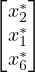
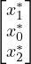
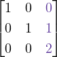
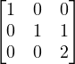
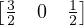
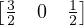

x11 = 6 , , | x32 = 8 , , | x13 = 3 , , |
x21 = 5 , , | x42 = 9, | x33 = 2, |
| x43 = 3. | ||
Exercice 1.
| Maximiser | 10c + | 15r + | 12t | ||||
| sous conditions : | |||||||
| 7c + | 10r + | 5t | ≤ | 2000, | |||
| 2c + | 3r + | 2t | ≤ | 600, | |||
| r | ≤ | 300, | |||||
| 15c - | 85r + | 15t | ≤ | 0, | |||
| c | ≥ | 0, | |||||
| r | ≥ | 0, | |||||
| t | ≥ | 0. | |||||
Solution optimale : r = 41, c= 227, t = 0 Valeur optimale : 5 155 €
Exercice 2. On prend i ∈{1, 2, 3, 4} comme le nombre de fret, j = 1 (compartiment à l’avant), j = 2 (compartiment au centre) et j = 3 (compartiment à l’arrière). Alors on définit les variables :
Puisqu’on veut maximiser le bénéfice, on pose la fonction objectif suivante :
Une solution optimal du système est :
| x11 = 6, | x32 = 8, | x13 = 3, |
| x21 = 5, | x42 = 9, | x33 = 2, |
| x43 = 3. | ||
La valeur optimale de cette solution donne un bénéfice de 9200 u.m.
On peut vérifier que cette solution permet de remplir tous les compartiments de l’avion jusqu’à sa capacité de poids maximale.
Dans certains cas la modélisation n’est pas unique. Par exemple, on peut choisir de définir les variables :
On obtient alors le modèle linéaire suivant :
Maximize obj1: 4400 x11 + 4400 x12 + 4400 x13 + 4480 x21 + 4480 x22 + 4480 x23 + 6250 x31 + 6250 x32 + 6250 x33 + 2600 x41 + 2600 x42 + 2600 x43 Subject To p1: 20 x11 + 16 x21 + 25 x31 + 13 x41 <= 12 p2: 20 x12 + 16 x22 + 25 x32 + 13 x42 <= 18 p3: 20 x13 + 16 x23 + 25 x33 + 13 x43 <= 10 v1: 1400 x11 + 1600 x21 + 2125 x31 + 780 x41 <= 1000 v2: 1400 x12 + 1600 x22 + 2125 x32 + 780 x42 <= 1300 v3: 1400 x13 + 1600 x23 + 2125 x33 + 780 x43 <= 700 e1: 360 x11 + 288 x21 + 450 x31 + 234 x41 -240 x12 -192 x22 -300 x32 -156 x42 = 0 e2: 200 x12 + 160 x22 + 250 x32 + 130 x42 -360 x13 -288 x23 -450 x33 -234 x43 = 0 f1: x11 + x12 +x13 <= 1 f2: x21 + x22 +x23 <= 1 f3: x31 + x32 +x33 <= 1 f4: x41 + x42 +x43 <= 1 Bounds 1 >= x11 >= 0 1 >= x12 >= 0 1 >= x13 >= 0 1 >= x21 >= 0 1 >= x22 >= 0 1 >= x23 >= 0 1 >= x31 >= 0 1 >= x32 >= 0 1 >= x33 >= 0 1 >= x41 >= 0 1 >= x42 >= 0 1 >= x43 >= 0 Generals Binaries End
Un solution optimale du système est :
Variable Name Solution Value x11 0.066667 x12 0.766667 x31 0.426667 x32 0.106667 x33 0.160000 x43 0.461538
En multipliant chaque variable par le poids du fret correspondant, on peut vérifier que cette solution permet de remplir tous les compartiments de l’avion jusqu’à sa capacité de poids maximale.
La valeur optimale de cette solution donne aussi un bénéfice de 9200 u.m.
Exercice 3.
(a)
| maximiser | 8N + 5L + 3B | ||
| subject to | 3 800N + 400L + 200B ≤ 500000 0.4L + 0.6B ≤ 1000 N ≥ 0 L ≥ 0 B ≥ 0 |
Solution optimale : N = 618.750, L=0, B=1666.666, Valeur optimale : 6 875 €
(b)
| maximiser | 8N + 5L1 + 5L2 + 3B | ||
| subject to | 4 800N + 400L1 + 500L2 + 200B ≤ 500000 0.4L1 + 0.4L2 + 0.6B ≤ 1000 N ≥ 0 L1 ≥ 0 L2 ≥ 0 B ≥ 0 |
Solution optimale : N = 618.750, L1=0, L2= 0, B=1666.666, Valeur optimale : 6 875 €
Exercice 4.
(a)
| minimiser | 400x + 600y | ||
| subject to | 2 400x ≤ 9600 600y ≤ 9600 110x + 220y ≥ 4400 100x + 100y ≥ 2600 x ≥ 0 y ≥ 0 | (S) |
Solution optimale : x = 12, y=14, Valeur optimale : 13 200 €
(b) Le système (S′) se obtient du système (S) en divisant la première contrainte par 400, la deuxième par 600,
la troisième par 110 et la quatrième par 100.
(c)
(d)
Selon la figure dans (c) la dépense minimale est de 13 200 €.
Exercice 5.
| maximiser | 3x1 - 5x2 | ||
| s. l. c. | 2 - 4x1 -5x2 ≤-3 6x1 -6x2 ≤ 7 - 6x1 + 6x2 ≤-7 x1 + 8x2 ≤ 20 x1 ≥ 0 x2 ≥ 0 |
Exercice 6.
| max | - 3x1 - x2 - 4x3 - x4 - 5x5+ + 5x 5- | ||
| subject to | 8 + 9x1 + 2x2 + 6x3 + 5x4 + 3x5+ -3x 5-≤ + 5 + 8x1 + 9x2 + 7x3 + 9x4 + 3x5+ -3x 5-≤ + 2 x1 ≥ 0 x2 ≥ 0 x3 ≥ 0 x4 ≥ 0 x5+ ≥ 0 x5- ≥ 0 |
Exercice 7.
(a)
| maximiser | 2x1 - x2 | ||
| s. l. c. | 3
 x1 + x2+ -x
2- ≤ 2
-x1 -x2+ + x
2- ≤-2
- 2x1 + 5x2+ -5x
2-≤ 7
x1 + x2+ -x
2- ≤ 4
x1 ≥ 0
x2+ ≥ 0
x2- ≥ 0 x1 + x2+ -x
2- ≤ 2
-x1 -x2+ + x
2- ≤-2
- 2x1 + 5x2+ -5x
2-≤ 7
x1 + x2+ -x
2- ≤ 4
x1 ≥ 0
x2+ ≥ 0
x2- ≥ 0 |
(b)
| max | 3x1 - x3 | ||
| subject to | 3
- x1 - x2 + 3x3 ≤-2
4x2 + x3 ≤ 5
- 4x2 -x3 ≤-5
x1 ≥ 0
- x2 ≥ 0
x3 ≥ 0 x2 + 3x3 ≤-2
4x2 + x3 ≤ 5
- 4x2 -x3 ≤-5
x1 ≥ 0
- x2 ≥ 0
x3 ≥ 0 |
(c)
| max | - 2x1 + 3x2+ - 3x 2- | ||
| subject to | 5 -x2+ + x 2- ≤ 3 2x1 -x2+ + x 2- ≤ 2 -2x1 + x2+ -x 2- ≤-2 x1 -3x2+ + 3x 2-≤-1 x1 ≥ 0 x2+ ≥ 0 x2- ≥ 0 |
(d)
| max | 10+x 1 - 10-x 1 - 5x2 | ||
| subject to | 5 x2 ≤-3 2x1+ -2x 1- + 7x 2 ≤ 2 -2x1+ + 2x 1--7x 2 ≤-2 -x1+ + x 1- -3x 2 ≤ + 4 + x1+ -x 1- + 3x 2 ≤-4 x1+ ≥ 0 x1- ≥ 0 -x2 ≥ 0 |
Exercice 8.
Observations. Soient r1,  , rn ∈ ℝ. Trouver max{r1, …, rn} est équivalent à resoudre le programme
linéaire :
, rn ∈ ℝ. Trouver max{r1, …, rn} est équivalent à resoudre le programme
linéaire :
| minimiser | y | ||
| s. c. | r1 | ≤ | y |
 |  |  |
|
| rn | ≤ | y | |
| y | ∈ | ℝ. |
Donc, si A est une matrice réel de m × n et x = (x1, …, xn) est un vecteur réel d’inconnues de dimension n. Trouver z = minmax{x1, …, xn} s. c. Ax ≤ b, x1, …, xn ∈ ℝ est équivalent à resoudre le programme linéaire :
| minimiser | y | ||
| s. c. | x1 | ≤ | y |
 |  |  | |
| x n | ≤ | y | |
| x1 | ∈ | ℝ | |
 |  |  |
|
| xn | ∈ | ℝ | |
| y | ∈ | ℝ. |
De manière similaire, puisque |x| := max{x,-x}≥ 0, trouver
est équivalente à resoudre le programme linéaire :
| minimiser | y1 | + + + | yn |
| s. c. | Ax | ≤ | b |
| x1 | ≤ | y1 | |
| -x1 | ≤ | y1 | |
 |  |  |
|
| xn | ≤ | y | |
| -xn | ≤ | y | |
| y1 | ≥ | 0 | |
 |  |  |
|
| yn | ≥ | 0 | |
(a)
| maximiser | - y+ + y- | ||
| s. c. | 7 -2x1 + x3 ≤ 12 2x1 -x3 ≤-12 x1 + 2x2 ≤ 5 2x1 -3x2 -y+ + y-≤ 0 x1 -2x2 + 4x3 -y+ + y-≤ 0 x1 ≥ 0 x2 ≥ 0 x3 ≥ 0 y+ ≥ 0 y-≥ 0 |
(b)
| maximiser | - y1 - y2 | ||
| s. c. | 7 x1 -4x2 + x3 ≤ 5 -x1 + 4x2 -x3 ≤-5 5x2 -3x3 ≤ 6 x1 -2x3 -y1 ≤ 0 -x1 + 2x3 -y1 ≤ 0 -x1 + 3x2 + x3 -y2 ≤ 0 x1 -3x2 -x3 -y2 ≤ 0 x1 ≥ 0 x2 ≥ 0 x3 ≥ 0 y1 ≥ 0 y2 ≥ 0 |
(c)
| maximiser | - y1 - y2 | ||
| s. c. | 7 x1 + x2 ≤ 1 x1 -y1 ≤ 10 - x1 + -y1 ≤-10 2x2 -y2 ≤ 4 3x1 -4x3 -y2 ≤ 0 - 3x1 + 4x3 + -y2 ≤ 0 - x1 + x2 + x3 ≤ 7 x1 -x2 -2x3 ≤ 7 x1 ≥ 0 x2 ≥ 0 x3 ≥ 0 y1 ≥ 0 y2 ≥ 0 |
Exercice 9.
Exercice 10.
Exercice 11.
Exercice 12.
Exercice 13.
(a)
| max | 3000c + 1000s | ||
| subject to | 2 c + s ≤ 28 c ≤ 10 s ≤ 20 3c -2s ≤ 3 c ≥ 0 s ≥ 0 |
(b)
(c)
Exercice 14.
(a)
| max | 100000T + 80000N | ||
| subject to | 2 800T + 600N ≤ 4800 T ≥ 3 N ≥ 1 |
(b)
(c)
(d)
Exercice 15.
sx1 + tx2 = 1 corresponde à une droite sur le plan cartésien qui est parallèle à l’axe des ordonnées ou des
abscisses, ou qui coupe l’axe x1 dans (1∕s,0) et l’axe x2 dans (0,1∕t).
(a)
Le système est toujours réalisable car le point (0, 0) satisfait les systèmes pour tous les valeurs de
s, t ∈ ℝ.
(b)
Le système est non-borné si et seulement si s ≤ 0 ou t ≤ 0.
(c)
Le système a une solution optimale si et seulement si : s > 0 et t > 0.
Exercice 16.
(a)
(b) et (c)
Pour n > 200 la solution optimale est : x1 = 0, x2 = 10.
Pour n = 200 le segment de droite entre (0, 10) et (,  ) contient toutes les solutions optimales.
) contient toutes les solutions optimales.
Pour 20 < n < 200 la solution optimale est : x1 =  , x2 = .
, x2 = .
Pour n = 20 le segment de droite entre (, ) et (5, 0) contient toutes les solutions optimales.
Pour 0 < n < 20 la solution optimale est : x1 = 5, x2 = 0.
Pour n = 0 le segment de droite entre (5, 0) et (∞, 0) contient toutes les solutions optimales.
Pour n < 0 le problème devient non-borné.
Exercice 17.
(a)
| maximiser | 1000X1 + 2000X2 | ||
| s. c. | 4 2X1 + 3X2 ≤18 X1 ≤5 X2 ≤3 X1 ≥0 X2 ≥0 |
(b)
(c)
Une machine additionnelle de type A permet un gain de : 11 000.
Une machine additionnelle de type B permet un gain de : 12 000.
Une machine additionnelle de type C permet un gain de : 10 500.
Donc la meilleure option c’est d’investir dans une machine de type 2.
Exercice 1.
(a)
(b)
En ajoutant les variables d’écart x3, …, x6 on obtient le système suivant :
| maximiser | 2x1 + 5x2 | ||
| s. c. | 7 2x1 -4x2 + x3 = 1 3x1 + 4x2 + x4 = 24 x2 + x5 = 4 x1 + x6 = 5 x1 ≥ 0 x2 ≥ 0 x3 ≥ 0 x4 ≥ 0 x5 ≥ 0 x6 ≥ 0 |
 ) du dessin correspond à cette solution de base.
) du dessin correspond à cette solution de base.
 ) du dessin correspond à cette solution de base.
) du dessin correspond à cette solution de base.
(c)
 ). On prend x1 = 5, x2 = et on résout le système pour les inconnues x3,x4,
x5 et x6. La solution est x1 = 5, x2 =
). On prend x1 = 5, x2 = et on résout le système pour les inconnues x3,x4,
x5 et x6. La solution est x1 = 5, x2 =  , x5 = 1.75, et x3 = x4 = x6 = 0. Donc, les bases
B2 = {x1, x2, x5, x3}, B5 = {x1, x2, x5, x4,} et B4 = {x1, x2, x5, x6} correspond au point A.
, x5 = 1.75, et x3 = x4 = x6 = 0. Donc, les bases
B2 = {x1, x2, x5, x3}, B5 = {x1, x2, x5, x4,} et B4 = {x1, x2, x5, x6} correspond au point A. , 0). On prend x1 =
, 0). On prend x1 =  , x2 = 0 et on résout le système pour les inconnues x3,x4,
x5 et x6. La solution est x1 =
, x2 = 0 et on résout le système pour les inconnues x3,x4,
x5 et x6. La solution est x1 =  , x4 = 22.5, x5 = 4, x6 = 4.5, et x2 = x3 = 0. Donc, la base
B6 = {x1, x4, x5, x6} correspond au point B.
, x4 = 22.5, x5 = 4, x6 = 4.5, et x2 = x3 = 0. Donc, la base
B6 = {x1, x4, x5, x6} correspond au point B. , 4). On prend x1 =
, 4). On prend x1 =  , x2 = 4 et on résout le système pour les inconnues x3,x4,
x5 et x6. La solution est x1 =
, x2 = 4 et on résout le système pour les inconnues x3,x4,
x5 et x6. La solution est x1 =  , x2 = 4, x3 =
, x2 = 4, x3 =  , x6 = , et x4 = x5 = 0. Donc, la base
B7 = {x1, x2, x3, x6} correspond au point C.
, x6 = , et x4 = x5 = 0. Donc, la base
B7 = {x1, x2, x3, x6} correspond au point C. On a une ensemble avec six variables (x1, x2, x3, x4, x5 et x6) et chaque base est un sous-ensemble avec
exactement quatre variables. Donc, la quantité de bases du programme linéaire est = = 15, dont 8
bases réalisables. Selon le dessin en (a), on a 5 points extrêmes.
(d)
Selon la partie (c) nous avons seulement la solution optimal suivante : B7 = {x1, x2, x3, x6} avec une valeur
optimale de .
Exercice 2.
(a)
(b)
| Maximiser | 4x1 + 3x2 | ||
| s. c. | 8 x1 + x3 = 8 x2 + x4 = 6 x1 + 2x2 + x5 = 15 2x1 + x2 + x6 = 18 x1 ≥ 0 x2 ≥ 0 x3 ≥ 0 x4 ≥ 0 x5 ≥ 0 x6 ≥ 0 | (P′ ) |
(c) On fait comme dans l’exercice 1 (c). Ici on montre seulement les valeurs des variables basiques.
x1 8.0
x2 2.0
x4 4.0
x5 3.0
x1 8.0
x4 6.0
x5 7.0
x6 2.0
x1 3.0
x2 6.0
x3 5.0
x6 6.0
x2 6.0
x3 8.0
x5 3.0
x6 12.0
x1 7.0
x2 4.0
x3 1.0
x4 2.0
x3 8.0
x4 6.0
x5 15.0
x6 18.0
(d)
x1 x2 x3 x4 x5 x6 z 1 0 1 0 0 0 0 | 8 0 1 0 1 0 0 0 | 6 1 2 0 0 1 0 0 | 15 2 1 0 0 0 1 0 | 18 -------------------------------------------------------------- -4 -3 0 0 0 0 1 | 0 Ce tableau est réalisable (il n’y a pas de nombres négatifs dans le quadrant supérieur droit). Mais ce n’est pas maximal (il y a des nombres négatifs sur le côté gauche de la dernière ligne). Un pivot est nécessaire. Nous recherchons d’abord la colonne pivot... La colonne pivot est celle avec le nombre « le plus négatif » dans la dernière ligne (c’est-à-dire le nombre négatif avec la plus grande valeur absolue) La colonne-pivot est la 1. x1 x2 x3 x4 x5 x6 z quotients col. 1 1 0 1 0 0 0 0 | 8 8.0 0 1 0 1 0 0 0 | 6 Inf. 1 2 0 0 1 0 0 | 15 15.0 2 1 0 0 0 1 0 | 18 9.0 -------------------------------------------------------------- -4 -3 0 0 0 0 1 | 0 Maintenant, nous cherchons la ligne pivot... La ligne pivot est celle avec le quotient non négatif le plus bas résultant de la division du coefficient de droite par le coefficient correspondant de la colonne pivot. Si tous les quotients sont négatifs ou infinis, le problème est non-borné. La ligne-pivot est la ligne 1. On effectue un pivot sur l’élément de l’entrée (1, 1) :
x1 x2 x3 x4 x5 x6 z 1.0 0.0 1.0 0.0 0.0 0.0 0.0 | 8.0 0 1 0 1 0 0 0 | 6.0 0.0 2.0 -1.0 0.0 1.0 0.0 0.0 | 7.0 0.0 1.0 -2.0 0.0 0.0 1.0 0.0 | 2.0 -------------------------------------------------------------------- 0.0 -3.0 4.0 0.0 0.0 0.0 1.0 | 32.0 Ce tableau est réalisable (il n’y a pas de nombres négatifs dans le quadrant supérieur droit). Mais ce n’est pas maximal (il y a des nombres négatifs sur le côté gauche de la dernière ligne). Un pivot est nécessaire. Nous recherchons d’abord la colonne pivot... La colonne pivot est celle avec le nombre « le plus négatif » dans la dernière ligne (c’est-à-dire le nombre négatif avec la plus grande valeur absolue)
La colonne-pivot est la 2. x1 x2 x3 x4 x5 x6 z quotients col. 2 1.0 0.0 1.0 0.0 0.0 0.0 0.0 | 8.0 Inf. 0 1 0 1 0 0 0 | 6.0 6.0 0.0 2.0 -1.0 0.0 1.0 0.0 0.0 | 7.0 3.5 0.0 1.0 -2.0 0.0 0.0 1.0 0.0 | 2.0 2.0 -------------------------------------------------------------- 0.0 -3.0 4.0 0.0 0.0 0.0 1.0 | 32.0 Maintenant, nous cherchons la ligne pivot... La ligne pivot est celle avec le quotient non négatif le plus bas résultant de la division du coefficient de droite par le coefficient correspondant de la colonne pivot. Si tous les quotients sont négatifs ou infinis, le problème est non-borné. La ligne-pivot est la ligne 4. On effectue un pivot sur l’élément de l’entrée (4, 2) : x1 x2 x3 x4 x5 x6 z 1.0 0.0 1.0 0.0 0.0 0.0 0.0 | 8.0 0.0 0.0 2.0 1.0 0.0 -1.0 0.0 | 4.0 0.0 0.0 3.0 0.0 1.0 -2.0 0.0 | 3.0 0.0 1.0 -2.0 0.0 0.0 1.0 0.0 | 2.0 -------------------------------------------------------------------- 0.0 0.0 -2.0 0.0 0.0 3.0 1.0 | 38.0 Ce tableau est réalisable (il n’y a pas de nombres négatifs dans le quadrant supérieur droit). Mais ce n’est pas maximal (il y a des nombres négatifs sur le côté gauche de la dernière ligne). Un pivot est nécessaire. Nous recherchons d’abord la colonne pivot... La colonne pivot est celle avec le nombre « le plus négatif » dans la dernière ligne (c’est-à-dire le nombre négatif avec la plus grande valeur absolue) La colonne-pivot est la 3.
x1 x2 x3 x4 x5 x6 z quotients col. 3 1.0 0.0 1.0 0.0 0.0 0.0 0.0 | 8.0 8.0 0.0 0.0 2.0 1.0 0.0 -1.0 0.0 | 4.0 2.0 0.0 0.0 3.0 0.0 1.0 -2.0 0.0 | 3.0 1.0 0.0 1.0 -2.0 0.0 0.0 1.0 0.0 | 2.0 -1.0 -------------------------------------------------------------- 0.0 0.0 -2.0 0.0 0.0 3.0 1.0 | 38.0 Maintenant, nous cherchons la ligne pivot... La ligne pivot est celle avec le quotient non négatif le plus bas résultant de la division du coefficient de droite par le coefficient correspondant de la colonne pivot. Si tous les quotients sont négatifs ou infinis, le problème est non-borné.
La ligne-pivot est la ligne 3. On effectue un pivot sur l’élément de l’entrée (3, 3) : x1 x2 x3 x4 x5 x6 z 1.0 0.0 0.0 0.0 -0.33 0.67 0.0 | 7.0 0.0 0.0 0.0 1.0 -0.67 0.33 0.0 | 2.0 0.0 0.0 1.0 0.0 0.33 -0.67 0.0 | 1.0 0.0 1.0 0.0 0.0 0.67 -0.33 0.0 | 4.0 -------------------------------------------------------------------- 0.0 0.0 0.0 0.0 0.67 1.67 1.0 | 40.0 Ce tableau est réalisable (il n’y a pas de nombres négatifs dans le quadrant supérieur droit) Ce tableau est déjà maximal (il n’y a pas de nombres négatifs sur le côté gauche de la dernière ligne). Solution optimale : x1 = 7.0 x2 = 4.0 x3 = 1.0 x4 = 2.0 Valeur optimale : z = 40.0
Exercice 3.
Exercice 4.
x1 x2 x3 x4 x5 x6 z
1 2 3 1 1 0 0 | 5
1 1 2 3 0 1 0 | 3
--------------------------------------------------------------
-5 -6 -9 -8 0 0 1 | 0
La colonne-pivot es la colonne 3
x1 x2 x3 x4 x5 x6 z quotients col. 3
1 2 3 1 1 0 0 | 5 1.67
1 1 2 3 0 1 0 | 3 1.50
--------------------------------------------------------------
-5 -6 -9 -8 0 0 1 | 0 0
La ligne-pivot est la ligne 2. On effectue un pivot sur l’élément de l’entrée (2, 3) :
x1 x2 x3 x4 x5 x6 z
-0.5 0.5 0.0 -3.5 1.0 -1.5 0.0 | 0.5
0.5 0.5 1.0 1.5 0.0 0.5 0.0 | 1.5
--------------------------------------------------------------
-0.5 -1.5 0.0 5.5 0.0 4.5 1.0 | 13.5
La colonne-pivot es la colonne 2
x1 x2 x3 x4 x5 x6 z quotients col. 2
-0.5 0.5 0.0 -3.5 1.0 -1.5 0.0 | 0.5 1.0
0.5 0.5 1.0 1.5 0.0 0.5 0.0 | 1.5 3.0
--------------------------------------------------------------
-0.5 -1.5 0.0 5.5 0.0 4.5 1.0 | 13.5
La ligne-pivot est la ligne 1. On effectue un pivot sur l’élément de l’entrée (1, 2) :
x1 x2 x3 x4 x5 x6 z
-1.0 1.0 0.0 -7.0 2.0 -3.0 0.0 | 1.0
1.0 0.0 1.0 5.0 -1.0 2.0 0.0 | 1.0
--------------------------------------------------------------
-2.0 0.0 0.0 -5.0 3.0 0.0 1.0 | 15.0
La colonne-pivot es la colonne 4
x1 x2 x3 x4 x5 x6 z quotients col. 4
-1.0 1.0 0.0 -7.0 2.0 -3.0 0.0 | 1.0 -0.14
1.0 0.0 1.0 5.0 -1.0 2.0 0.0 | 1.0 0.2
--------------------------------------------------------------
-2.0 0.0 0.0 -5.0 3.0 0.0 1.0 | 15.0
La ligne-pivot est la ligne 2. On effectue un pivot sur l’élément de l’entrée (2, 4) :
x1 x2 x3 x4 x5 x6 z
0.4 1.0 1.4 0.0 0.6 -0.2 0.0 | 2.4
0.2 0.0 0.2 1.0 -0.2 0.4 0.0 | 0.2
--------------------------------------------------------------
-1.0 0.0 1.0 0.0 2.0 2.0 1.0 | 16.0
La colonne-pivot es la colonne 1
x1 x2 x3 x4 x5 x6 z quotients col. 1
0.4 1.0 1.4 0.0 0.6 -0.2 0.0 | 2.4 6.0
0.2 0.0 0.2 1.0 -0.2 0.4 0.0 | 0.2 1.0
--------------------------------------------------------------
-1.0 0.0 1.0 0.0 2.0 2.0 1.0 | 16.0
La ligne-pivot est la ligne 2. On effectue un pivot sur l’élément de l’entrée (2, 1) :
x1 x2 x3 x4 x5 x6 z
0.0 1.0 1.0 -2.0 1.0 -1.0 0.0 | 2.0
1.0 0.0 1.0 5.0 -1.0 2.0 0.0 | 1.0
--------------------------------------------------------------
0.0 0.0 2.0 5.0 1.0 4.0 1.0 | 17.0
Solution optimale :
x2 = 2.0
x1 = 1.0
Valeur optimale :
z = 17.0
Exercice 5.
x1 x2 x3 x4 x5 x6 z 2 3 1 0 0 0 0 | 3 1 5 0 1 0 0 0 | 1 2 1 0 0 1 0 0 | 4 4 1 0 0 0 1 0 | 5 -------------------------------------------------------------- -2 -1 0 0 0 0 1 | 0 La colonne-pivot es la colonne 1 x1 x2 x3 x4 x5 x6 z quotients col. 1 2 3 1 0 0 0 0 | 3 1.5 1 5 0 1 0 0 0 | 1 1.0 2 1 0 0 1 0 0 | 4 2.0 4 1 0 0 0 1 0 | 5 1.25 -------------------------------------------------------------- -2 -1 0 0 0 0 1 | 0 La ligne-pivot est la ligne 2. On effectue un pivot sur l’élément de l’entrée (2, 1) : x1 x2 x3 x4 x5 x6 z 0.0 -7.0 1.0 -2.0 0.0 0.0 0.0 | 1.0 1.0 5.0 0.0 1.0 0.0 0.0 0.0 | 1.0 0.0 -9.0 0.0 -2.0 1.0 0.0 0.0 | 2.0 0.0 -19.0 0.0 -4.0 0.0 1.0 0.0 | 1.0 -------------------------------------------------------------- 0.0 9.0 0.0 2.0 0.0 0.0 1.0 | 2.0 Solution optimale : x1 = 1.0 x3 = 1.0 x5 = 2.0 x6 = 1.0 Valeur optimale : z = 2.0
Exercice 6.
(a)
D’abord on écrit le problème dans la forme standard.
| maximiser | 3x1 + 2x2 + 4x3 | ||
| s. c. | 8 x1 + x2 + 2x3 + x4 =4 2x1 + 3x3 + x5 =5 2x1 + x2 + 3x3 + x6 =7 x1 ≥0 x2 ≥0 x3 ≥0 x4 ≥0 x5 ≥0 x6 ≥0 |
On écrit le dictionnaire initial en prenant les variables d’écart comme les variables de base.
| x4 | = | 4 | -x1 | -x2 | -2x3 | ||
| x5 | = | 5 | -2x1 | -3x3 | |||
| x6 | = | 7 | -2x1 | -x2 | -3x3 | ||
| z | = | 3x1 | +2x2 | +4x3 | |||
On choisit la variable non-basique avec le coefficient positif le plus grand dans la ligne correspondant à la fonction objectif pour entrer dans la base. Dans ce cas, x3 va entrer dans la base.
On cherche la contrainte plus stricte sous les conditions x1 = x2 = 0, x4 ≥ 0, x5 ≥ 0 et x6 ≥ 0.
 4 - 2x3 ≥ 0
4 - 2x3 ≥ 0  x3 ≤ 2,
x3 ≤ 2,
 5 - 3x3 ≥ 0
5 - 3x3 ≥ 0  x3 ≤,
x3 ≤,
 7 - 3x3 ≥ 0
7 - 3x3 ≥ 0  x3 ≤,
x3 ≤, La contrainte plus stricte est x3 ≤ (deuxième équation) et alors x5 sort de la base.
(deuxième équation) et alors x5 sort de la base.
On tire x3 dans la deuxième équation du dictionnaire
et on remplace x3 par cette expression dans les autres équations :
Alors, on obtient le dictionnaire :
| x4 | = |  | + x1 x1 | -x2 | + x5 x5 | |||
| x3 | = |  | - x1 x1 | - x5 x5 | ||||
| x6 | = | 2 | -x2 | +x5 | ||||
| z | = | + x1 x1 | +2x2 | - x5 x5 | ||||
On choisit la variable non-basique avec le coefficient positif le plus grand dans la ligne correspondant à la fonction objectif pour entrer dans la base. Dans ce cas, x2 va entrer dans la base.
On cherche la contrainte plus stricte sous les conditions x1 = x5 = 0, x4 ≥ 0, x3 ≥ 0 et x6 ≥ 0.
 +
+  x1 - x2 +
x1 - x2 +  x5
x5  x2 ≤
x2 ≤ ,
,
 -
- x1 -
x1 - x5 ne contient pas de variable x2,
x5 ne contient pas de variable x2,
 x2 ≤ 2,
x2 ≤ 2, La contrainte plus stricte est x2 ≤ (première équation) et alors x4 sort de la base.
(première équation) et alors x4 sort de la base.
On tire x2 dans la première équation du dictionnaire
et on remplace x2 par cette expression dans les autres équations :
Alors, on obtient le dictionnaire :
| x2 | = |  | + x1 x1 | -x4 | +x5 | |||
| x3 | = |  | - x1 x1 | - x5 x5 | ||||
| x6 | = |  | - x1 x1 | +x4 | + x5 x5 | |||
| z | = | 8 | +x1 | -2x4 | ||||
On choisit la variable non-basique avec le coefficient positif le plus grand dans la ligne correspondant à la fonction objectif pour entrer dans la base. Dans ce cas, x1 va entrer dans la base.
On cherche la contrainte plus stricte sous les conditions x4 = x5 = 0, x2 ≥ 0, x3 ≥ 0 et x6 ≥ 0.
 +
+  x1 - x4 +
x1 - x4 +  x5
x5  - 2 ≤ x1,
- 2 ≤ x1,
 -
- x1 -x5
x1 -x5  x1 ≤
x1 ≤ ,
,
 -x1 + x4 +
-x1 + x4 +  x5 x1 ≤ 4,
x5 x1 ≤ 4, La contrainte plus stricte est x1 ≤ (deuxième équation) et alors x3 sort de la base.
(deuxième équation) et alors x3 sort de la base.
On tire x1 dans la deuxième équation du dictionnaire
et on remplace x1 par cette expression dans les autres équations :
Alors, on obtient le dictionnaire :
| x2 | = |  | - x3 x3 | -x4 | + x5 x5 | |||
| x1 | = |  | - x3 x3 | - x5 x5 | ||||
| x6 | = |  | + x3 x3 | +x4 | + x5 x5 | |||
| z | = |  | - x3 x3 | -2x4 | - x5 x5 | |||
Puisqu’il n’y a plus de variables non-basiques avec coefficients positifs dans la ligne correspondant à la fonction objectif, cette dictionnaire donne une solution optimale.
La solution optimale est : x2 =  , x1 =
, x1 =  , x6 =
, x6 =  , x3 = x4 = x5 = 0 et z = .
, x3 = x4 = x5 = 0 et z = .
(b)
x1 x2 x3 x4 x5 x6 z 1 1 2 1 0 0 0 | 4 2 0 3 0 1 0 0 | 5 2 1 3 0 0 1 0 | 7 -------------------------------------------------------------- -3 -2 -4 0 0 0 1 | 0 La colonne-pivot est la colonne 3 x1 x2 x3 x4 x5 x6 z quotients col. 3 1 1 2 1 0 0 0 | 4 2.00 2 0 3 0 1 0 0 | 5 1.67 2 1 3 0 0 1 0 | 7 2.33 -------------------------------------------------------------- -3 -2 -4 0 0 0 1 | 0 La ligne-pivot est la ligne 2. On effectue un pivot sur l’élément de l’entrée (2, 3) : x1 x2 x3 x4 x5 x6 z -0.33 1.0 0.0 1.0 -0.67 0.0 0.0 | 0.67 0.67 0.0 1.0 0.0 0.33 0.0 0.0 | 1.67 -0.00 1.0 0.0 0.0 -1.00 1.0 0.0 | 2.00 -------------------------------------------------------------- -0.33 -2.0 0.0 0.0 1.33 0.0 1.0 | 6.67 La colonne-pivot est la colonne 2 x1 x2 x3 x4 x5 x6 z quotients col. 2 -0.33 1.0 0.0 1.0 -0.67 0.0 0.0 | 0.67 0.67 0.67 0.0 1.0 0.0 0.33 0.0 0.0 | 1.67 Inf. -0.00 1.0 0.0 0.0 -1.00 1.0 0.0 | 2.00 2.00 -------------------------------------------------------------- -0.33 -2.0 0.0 0.0 1.33 0.0 1.0 | 6.67 La ligne-pivot est la ligne 1. On effectue un pivot sur l’élément de l’entrée (1, 2) : x1 x2 x3 x4 x5 x6 z -0.33 1.0 0.0 1.0 -0.67 0.0 0.0 | 0.67 0.67 0.0 1.0 0.0 0.33 0.0 0.0 | 1.67 0.33 0.0 0.0 -1.0 -0.33 1.0 0.0 | 1.33 -------------------------------------------------------------- -1.00 0.0 0.0 2.0 0.00 0.0 1.0 | 8.00 La colonne-pivot est la colonne 1
x1 x2 x3 x4 x5 x6 z quotients col. 1 -0.33 1.0 0.0 1.0 -0.67 0.0 0.0 | 0.67 -1.99 0.67 0.0 1.0 0.0 0.33 0.0 0.0 | 1.67 2.50 0.33 0.0 0.0 -1.0 -0.33 1.0 0.0 | 1.33 4.00 -------------------------------------------------------------- -1.00 0.0 0.0 2.0 0.00 0.0 1.0 | 8.00 La ligne pivot est la ligne 2. On effectue un pivot sur l’élément de l’entrée (2, 1) : x1 x2 x3 x4 x5 x6 z 0.0 1.0 0.5 1.0 -0.5 0.0 0.0 | 1.5 1.0 0.0 1.5 0.0 0.5 0.0 0.0 | 2.5 0.0 0.0 -0.5 -1.0 -0.5 1.0 0.0 | 0.5 -------------------------------------------------------------- 0.0 0.0 1.5 2.0 0.5 0.0 1.0 | 10.5 Solution optimale : x1 = 2.5 x2 = 1.5 x6 = 0.5 Valeur optimale : z = 10.5
Exercice 7.
x1 x2 x3 x4 x5 z
2 3 1 0 0 0 | 1.00
1 0 0 1 0 0 | 0.33
0 1 0 0 1 0 | 0.25
------------------------------------------------------
-1 -1 0 0 0 1 | 0.00
La colonne-pivot es la colonne 1
x1 x2 x3 x4 x5 z quotients col. 1
2 3 1 0 0 0 | 1.00 0.50
1 0 0 1 0 0 | 0.33 0.33
0 1 0 0 1 0 | 0.25 Inf.
------------------------------------------------------
-1 -1 0 0 0 1 | 0.00
La ligne-pivot est la ligne 2. On effectue un pivot sur l’élément de l’entrée (2, 1) :
x1 x2 x3 x4 x5 z
0.0 3.0 1.0 -2.0 0.0 0.0 | 0.33
1.0 0.0 0.0 1.0 0.0 0.0 | 0.33
0.0 1.0 0.0 0.0 1.0 0.0 | 0.25
------------------------------------------------------
0.0 -1.0 0.0 1.0 0.0 1.0 | 0.33
La colonne-pivot es la colonne 2
x1 x2 x3 x4 x5 z quotients col. 2
0.0 3.0 1.0 -2.0 0.0 0.0 | 0.33 0.11
1.0 0.0 0.0 1.0 0.0 0.0 | 0.33 Inf.
0.0 1.0 0.0 0.0 1.0 0.0 | 0.25 0.25
------------------------------------------------------
0.0 -1.0 0.0 1.0 0.0 1.0 | 0.33
La ligne-pivot est la ligne 1. On effectue un pivot sur l’élément de l’entrée (2, 1) :
x1 x2 x3 x4 x5 z
0.0 1.0 0.33 -0.67 0.0 0.0 | 0.11
1.0 0.0 0.00 1.00 0.0 0.0 | 0.33
0.0 0.0 -0.33 0.67 1.0 0.0 | 0.14
------------------------------------------------------
0.0 0.0 0.33 0.33 0.0 1.0 | 0.44
Solution optimale :
x1 = 0.33
x2 = 0.11
x5 = 0.14
Valeur optimale :
z = 0.44
Exercice 8.
x1 x2 x3 x4 x5 x6 z 2 -1 1 1 0 0 0 | 10 3 -2 1 0 1 0 0 | 10 1 -3 1 0 0 1 0 | 10 -------------------------------------------------------------- -1 -3 -1 0 0 0 1 | 0 La colonne-pivot est la colonne 2 x1 x2 x3 x4 x5 x6 z quotients col. 2 2 -1 1 1 0 0 0 | 10 -10.0 3 -2 1 0 1 0 0 | 10 -5.00 1 -3 1 0 0 1 0 | 10 -3.33 -------------------------------------------------------------- -1 -3 -1 0 0 0 1 | 0 Puisque tous les quotients sont négatifs, le problème n’est pas borné.
Exercice 9.
x1 x2 x3 x4 x5 x6 z 2 2 -1 1 0 0 0 | 10 3 -2 1 0 1 0 0 | 10 1 -3 1 0 0 1 0 | 10 -------------------------------------------------------------- -1 -3 -1 0 0 0 1 | 0 La colonne-pivot est la colonne 2 x1 x2 x3 x4 x5 x6 z quotients col. 2 2 2 -1 1 0 0 0 | 10 5.00 3 -2 1 0 1 0 0 | 10 -5.00 1 -3 1 0 0 1 0 | 10 -3.33 -------------------------------------------------------------- -1 -3 -1 0 0 0 1 | 0 La ligne-pivot est la ligne 1. On effectue un pivot sur l’élément de l’entrée (1, 2) : x1 x2 x3 x4 x5 x6 z 1.0 1.0 -0.5 0.5 0.0 0.0 0.0 | 5.0 5.0 0.0 0.0 1.0 1.0 0.0 0.0 | 20.0 4.0 0.0 -0.5 1.5 0.0 1.0 0.0 | 25.0 -------------------------------------------------------------- 2.0 0.0 -2.5 1.5 0.0 0.0 1.0 | 15.0 La colonne-pivot est la colonne 3 x1 x2 x3 x4 x5 x6 z quotients col. 3 1.0 1.0 -0.5 0.5 0.0 0.0 0.0 | 5.0 -10.0 5.0 0.0 0.0 1.0 1.0 0.0 0.0 | 20.0 Inf. 4.0 0.0 -0.5 1.5 0.0 1.0 0.0 | 25.0 -50.0 -------------------------------------------------------------- 2.0 0.0 -2.5 1.5 0.0 0.0 1.0 | 15.0 Puisque tous les quotients sont négatifs ou infinis, le problème n’est pas borné.
Exercice 10.
(a)
La solution correspondant au ce dictionnaire est : z = 10, x4 = 3, x2 = 9, x3 = 7 et x1 = x5 = x6 = 0.
(b)
Puisque la variable no basique x5 a une coefficient nul dans l’equation de la fonction objectif, le problème admet plus d’une solution optimale. Si on introduit x5 dans la base et on fait sortir x1 de la base, on obtient le dictionnaire suivant (on tire x1 dans la première équation et on remplace x1 par son expression dans les autres deux équations) :
| x5 | = | 3 | -2x1 | -x4 | +x6 | |||
| x2 | = | 3 | +3x1 | +2x4 | -4x6 | |||
| x3 | = | 1 | +5x1 | +2x4 | -3x6 | |||
| z | = | 10 | -x1 | -2x6 | ||||
La solution correspondant au ce dictionnaire est : z = 10, x5 = 3, x2 = 3, x3 = 1 et x1 = x4 = x6 = 0.
(c)
Il suffit de donner une valeur positive à x4 dans le dictionnaire dans (b). Par exemple, pour x4 = 1, x1 = 0 et x6 = 0 on obtient :
| x5 | = | 3 | -2x1 | -x4 | +x6 |  | x5 | = | 2 | |||
| x2 | = | 3 | +3x1 | +2x4 | -4x6 |  | x2 | = | 5 | |||
| x3 | = | 1 | +5x1 | +2x4 | -3x6 |  | x3 | = | 3 | |||
| z | = | 10 | -x1 | -2x6 |  | z | = | 10 | ||||
Exercice 11.
x1 x2 x3 x4 x5 x6 z 1 2 3 1 1 0 0 | 5 1 1 2 3 0 1 0 | 3 -------------------------------------------------------------- -2 -3 -5 -4 0 0 1 | 0 La colonne-pivot est la colonne 3 x1 x2 x3 x4 x5 x6 z quotients col. 3 1 2 3 1 1 0 0 | 5 1.67 1 1 2 3 0 1 0 | 3 1.50 -------------------------------------------------------------- -2 -3 -5 -4 0 0 1 | 0 La ligne-pivot est la ligne 2. On effectue un pivot sur l’élément de l’entrée (2, 3) x1 x2 x3 x4 x5 x6 z -0.5 0.5 0.0 -3.5 1.0 -1.5 0.0 | 0.5 0.5 0.5 1.0 1.5 0.0 0.5 0.0 | 1.5 -------------------------------------------------------------- 0.5 -0.5 0.0 3.5 0.0 2.5 1.0 | 7.5
La colonne-pivot est la colonne 2 x1 x2 x3 x4 x5 x6 z quotients col. 2 -0.5 0.5 0.0 -3.5 1.0 -1.5 0.0 | 0.5 1.0 0.5 0.5 1.0 1.5 0.0 0.5 0.0 | 1.5 3.0 -------------------------------------------------------------- 0.5 -0.5 0.0 3.5 0.0 2.5 1.0 | 7.5 La ligne-pivot est la ligne 1. On effectue un pivot sur l’élément de l’entrée (1, 2) : x1 x2 x3 x4 x5 x6 z -1.0 1.0 0.0 -7.0 2.0 -3.0 0.0 | 1.0 1.0 0.0 1.0 5.0 -1.0 2.0 0.0 | 1.0 -------------------------------------------------------------- 0.0 0.0 0.0 0.0 1.0 1.0 1.0 | 8.0 Notons T ce dernier tableau.
Ce tableau T donne une première solution optimale. Solution optimale 1: x2 = 1.0 x3 = 1.0 Valeur optimale : z = 8.0
Puisque dans T les variables non basiques x1 et x4 ont coefficients nuls dans la ligne de la fonction objectif, il existe des solutions optimales alternatives si on pivot sur les colonnes correspondantes du tableau.
Maintenant on liste toutes les solutions optimales pour chaque pivot :
* Si on pivot sur l’élément de l’entrée (2, 1) de T on obtient x1 x2 x3 x4 x5 x6 z 0.0 1.0 1.0 -2.0 1.0 -1.0 0.0 | 2.0 1.0 0.0 1.0 5.0 -1.0 2.0 0.0 | 1.0 -------------------------------------------------------------- 0.0 0.0 0.0 0.0 1.0 1.0 1.0 | 8.0 Solution optimale 2: x1 = 1.0 x2 = 2.0 Valeur optimale : z = 8.0
* Si on pivot sur l’élément de l’entrée (2, 4) de T on obtient x1 x2 x3 x4 x5 x6 z 0.4 1.0 1.4 0.0 0.6 -0.2 0.0 | 2.4 0.2 0.0 0.2 1.0 -0.2 0.4 0.0 | 0.2 -------------------------------------------------------------- 0.0 0.0 0.0 0.0 1.0 1.0 1.0 | 8.0 Solution optimale 3: x2 = 2.4 x4 = 0.2 Valeur optimale : z = 8.0
On peut vérifier que les autres pivots sur ces tableaus ne donnent pas des solutiones basiques optimales ou réalisables additionnelles. On a donc trois solutiones basiques optimales.
Exercice 1.
On ajoute les variables d’écart x3, x4, x5, x6, x7 et on obtient le problème suivant :
| maximiser | z | = | 3x1 | +4x2 | |||||||
| s. c. | |||||||||||
| -4x 1 | -2x2 | +x3 | = | -8 | |||||||
| -2x 1 | +x4 | = | -2 | ||||||||
| 3x 1 | +2x2 | +x5 | = | 10 | |||||||
| -x1 | +3x2 | +x6 | = | 1 | |||||||
| -3x2 | +x7 | = | -2 | ||||||||
| x1, | x2, | x3, | x4, | x5, | x6, | x7 | ≥ | 0 | |||
Le dictionnaire pour la base composée des variables d’écart est :
| x3 | = | -8 | +4x1 | +2x2 | |||
| x4 | = | -2 | +2x1 | ||||
| x5 | = | 10 | -3x1 | -2x2 | |||
| x6 | = | 1 | +x1 | -3x2 | |||
| x7 | = | -2 | +3x2 | ||||
| z | = | 3x1 | +4x2 | ||||
Ce dictionnaire ne correspond pas à une base réalisable, car il y a des termes qui sont des nombres réels négatifs dans les équations des variables basiques. Alors on formule le problème auxiliaire suivant correspondant à la Phase I de la méthode des deux phases.
| maximiser | -x0 | |||||||||||
| s. c. | ||||||||||||
| -4x 1 | -2x2 | +x3 | -x0 | = | -8 | |||||||
| -2x 1 | +x4 | -x0 | = | -2 | ||||||||
| 3x 1 | +2x2 | +x5 | -x0 | = | 10 | |||||||
| -x1 | +3x2 | +x6 | -x0 | = | 1 | |||||||
| -3x2 | +x7 | -x0 | = | -2 | ||||||||
| x1, | x2, | x3, | x4, | x5, | x6, | x7, | x0 | ≥ | 0 | |||
On construit alors le dictionnaire suivant pour ce problème.
| x3 | = | -8 | +4x1 | +2x2 | +x0 | ||
| x4 | = | -2 | +2x1 | +x0 | |||
| x5 | = | 10 | -3x1 | -2x2 | +x0 | ||
| x6 | = | 1 | +x1 | -3x2 | +x0 | ||
| x7 | = | -2 | +3x2 | +x0 | |||
| w | = | -x0 | |||||
Le nombre négatif plus petit est le -8 (dans la première équation), pourtant on fait x0 basique et x3 non basique. On obtient les équations :
qui correspondent au dictionnaire suivant.
| x0 | = | 8 | -4x1 | -2x2 | +x3 | ||
| x4 | = | 6 | -2x1 | -2x2 | +x3 | ||
| x5 | = | 18 | -7x1 | -4x2 | +x3 | ||
| x6 | = | 9 | -3x1 | -5x2 | +x3 | ||
| x7 | = | 6 | -4x1 | +x2 | +x3 | ||
| w | = | -8 | +4x1 | +2x2 | -x3 | ||
Ce dictionnaire est équivalent au tableau réalisable suivant sur lequel on commence l’exécution de la méthode du simplexe.
| x1 | x2 | x3 | x4 | x5 | x6 | x7 | x0 | w | |
| 4 | 2 | -1 | 0 | 0 | 0 | 0 | 1 | 0 | 8 |
| 2 | 2 | -1 | 1 | 0 | 0 | 0 | 0 | 0 | 6 |
| 7 | 4 | -1 | 0 | 1 | 0 | 0 | 0 | 0 | 18 |
| 3 | 5 | -1 | 0 | 0 | 1 | 0 | 0 | 0 | 9 |
| 4 | -1 | -1 | 0 | 0 | 0 | 1 | 0 | 0 | 6 |
| -4 | -2 | 1 | 0 | 0 | 0 | 0 | 0 | 1 | -8 |
La colonne-pivot est la colonne 1.
x1 x2 x3 x4 x5 x6 x7 x0 w quotients col. 1
4 2 -1 0 0 0 0 1 0 | 8 2.00
2 2 -1 1 0 0 0 0 0 | 6 3.00
7 4 -1 0 1 0 0 0 0 | 18 2.57
3 5 -1 0 0 1 0 0 0 | 9 3.00
4 -1 -1 0 0 0 1 0 0 | 6 1.50
----------------------------------------------------------------------------
-4 -2 1 0 0 0 0 0 1 | -8
La ligne-pivot est la ligne 5. On effectue un pivot sur l’élément de l’entrée (5, 1) et on
obtient le tableau suivant :
x1 x2 x3 x4 x5 x6 x7 x0 w
0.0 3.0 0.0 0.0 0.0 0.0 -1.0 1.0 0.0 | 2.0
0.0 2.5 -0.5 1.0 0.0 0.0 -0.5 0.0 0.0 | 3.0
0.0 5.75 0.75 0.0 1.0 0.0 -1.75 0.0 0.0 | 7.5
0.0 5.75 -0.25 0.0 0.0 1.0 -0.75 0.0 0.0 | 4.5
1.0 -0.25 -0.25 0.0 0.0 0.0 0.25 0.0 0.0 | 1.5
----------------------------------------------------------------------------
0.0 -3.0 0.0 0.0 0.0 0.0 1.0 0.0 1.0 | -2.0
La colonne-pivot est la colonne 2.
x1 x2 x3 x4 x5 x6 x7 x0 w quotients col. 2
0.0 3.0 0.0 0.0 0.0 0.0 -1.0 1.0 0.0 | 2.0 0.67
0.0 2.5 -0.5 1.0 0.0 0.0 -0.5 0.0 0.0 | 3.0 1.20
0.0 5.75 0.75 0.0 1.0 0.0 -1.75 0.0 0.0 | 7.5 1.30
0.0 5.75 -0.25 0.0 0.0 1.0 -0.75 0.0 0.0 | 4.5 0.78
1.0 -0.25 -0.25 0.0 0.0 0.0 0.25 0.0 0.0 | 1.5 -6.00
----------------------------------------------------------------------------
0.0 -3.0 0.0 0.0 0.0 0.0 1.0 0.0 1.0 | -2.0
La ligne-pivot est la ligne 1. On effectue un pivot sur l’élément de l’entrée (1, 2) et on
obtient le tableau suivant :
x1 x2 x3 x4 x5 x6 x7 x0 w
0.0 1.0 0.0 0.0 0.0 0.0 -0.33 0.33 0.0 | 0.67
0.0 0.0 -0.5 1.0 0.0 0.0 0.33 -0.83 0.0 | 1.33
0.0 0.0 0.75 0.0 1.0 0.0 0.16 -1.91 0.0 | 3.66
0.0 0.0 -0.25 0.0 0.0 1.0 1.16 -1.91 0.0 | 0.66
1.0 0.0 -0.25 0.0 0.0 0.0 0.17 0.08 0.0 | 1.67
----------------------------------------------------------------------------
0.0 0.0 0.0 0.0 0.0 0.0 0.0 1.0 1.0 | 0.0
Ce tableau correspond à une solution réalisable optimale.
Solution optimale:
x2 = 2/3
x4 = 4/3
x5 = 11/3
x6 = 2/3
x1 = 5/3
Valeur optimale :
w = 0.0
Puisque la valeur optimale est égale à zéro, le probléme originel est réalisable et on peut commencer la phase II de la méthode des deux phases. On commence par supprimer la colonne de la variable artificielle x0. On obtient les équations suivantes :
| x2 | = |  | + x7 x7 | ||||
| x4 | = |  | + x3 x3 | - x7 x7 | |||
| x5 | = | - x3 x3 | - x7 x7 | ||||
| x6 | = |  | +x3 | -x7 | |||
| x1 | = |  | + x3 x3 | - x7. x7. | |||
En utilisant ces équations, on calcule la ligne de la fonction objectif en exprimant la fonction objectif du
problème originel comme une combinaison linéaire des variables non-basiques. Dans ce cas, nous avons :
z = 3x1 + 4x2 = 3( +
+  x3 -
x3 - x7) + 4(
x7) + 4( +
+  x7) = +
x7) = +  x3 -x7 + +
x3 -x7 + +  x7 =
x7 =  + x3 +
+ x3 +  x7. On obtient le
tableau suivant avec lequel on commence l’exécution de la méthode du simplexe.
x7. On obtient le
tableau suivant avec lequel on commence l’exécution de la méthode du simplexe.
| x1 | x2 | x3 | x4 | x5 | x6 | x7 | z | |
| 0 | 1 | 0 | 0 | 0 | 0 | - | 0 |  |
| 0 | 0 | - | 1 | 0 | 0 |  | 0 | |
| 0 | 0 |  | 0 | 1 | 0 |  | 0 | |
| 0 | 0 | - | 0 | 0 | 1 | 0 |  |
|
| 1 | 0 | - | 0 | 0 | 0 | 0 |  |
|
| 0 | 0 | - | 0 | 0 | 0 | - | 1 | |
La colonne-pivot est la colonne 7.
x1 x2 x3 x4 x5 x6 x7 z quotients col. 7
0 1 0 0 0 0 -0.33 0 | 0.67 -2.00
0 0 -0.5 1 0 0 0.33 0 | 1.33 4.00
0 0 0.75 0 1 0 0.17 0 | 3.67 22.00
0 0 -0.25 0 0 1 1.17 0 | 0.67 0.57
1 0 -0.25 0 0 0 0.17 0 | 1.67 10.00
--------------------------------------------------------------------
0 0 -0.75 0 0 0 -0.83 1 | 7.66
La ligne-pivot est la ligne 4. On effectue un pivot sur l’élément de l’entrée (4, 7).
x1 x2 x3 x4 x5 x6 x7 z
0.0 1.0 -0.07 0.0 0.0 0.29 0.0 0.0 | 0.86
0.0 0.0 -0.43 1.0 0.0 -0.29 0.0 0.0 | 1.14
0.0 0.0 0.79 0.0 1.0 -0.14 0.0 0.0 | 3.57
0.0 0.0 -0.21 0.0 0.0 0.86 1.0 0.0 | 0.57
1.0 0.0 -0.21 0.0 0.0 -0.14 0.0 0.0 | 1.57
--------------------------------------------------------------------
0.0 0.0 -0.93 0.0 0.0 0.71 0.0 1.0 | 8.14
La colonne-pivot est la colonne 3.
x1 x2 x3 x4 x5 x6 x7 z quotients col. 3
0.0 1.0 -0.07 0.0 0.0 0.29 0.0 0.0 | 0.86 -12.01
0.0 0.0 -0.43 1.0 0.0 -0.29 0.0 0.0 | 1.14 -2.67
0.0 0.0 0.79 0.0 1.0 -0.14 0.0 0.0 | 3.57 4.55
0.0 0.0 -0.21 0.0 0.0 0.86 1.0 0.0 | 0.57 -2.67
1.0 0.0 -0.21 0.0 0.0 -0.14 0.0 0.0 | 1.57 -7.33
--------------------------------------------------------------------
0.0 0.0 -0.93 0.0 0.0 0.71 0.0 1.0 | 8.14
La ligne-pivot est la ligne 3. On effectue un pivot sur l’élément de l’entrée (3, 3).
x1 x2 x3 x4 x5 x6 x7 z
0.0 1.0 0.0 0.0 0.09 0.27 0.0 0.0 | 1.18
0.0 0.0 0.0 1.0 0.55 -0.36 0.0 0.0 | 3.09
0.0 0.0 1.0 0.0 1.27 -0.18 0.0 0.0 | 4.55
0.0 0.0 0.0 0.0 0.27 0.82 1.0 0.0 | 1.54
1.0 0.0 0.0 0.0 0.27 -0.18 0.0 0.0 | 2.55
--------------------------------------------------------------------
0.0 0.0 0.0 0.0 1.18 0.55 0.0 1.0 | 12.36
Ce tableau correspond à une solution réalisable optimale.
Solution optimale :
x2 = 13/11
x4 = 34/11
x3 = 50/11
x7 = 17/11
x1 = 28/11
Valeur optimale : z = 136/11
La figure suivante montre la solution du problème par la méthode graphique.
On peut faire les observations suivantes :
 ).
).
 ,
,  )). Après une itération de la méthode du simplexe nous
avons arrivé au point (,
)). Après une itération de la méthode du simplexe nous
avons arrivé au point (,  ). Finalement, dans la deuxième itération de la méthode du simplexe
nous avons arrivé au point extrême (, ) qui correspond à une solution optimale du problème.
). Finalement, dans la deuxième itération de la méthode du simplexe
nous avons arrivé au point extrême (, ) qui correspond à une solution optimale du problème.Exercice 3.
On ajoute les variables d’écart x3, x4, x5, x6, x7 et on obtient le problème suivant :
| maximiser | z | = | 3x1 | +x2 | |||||||
| s. c. | |||||||||||
| x 1 | -x2 | +x3 | = | -1 | |||||||
| -x 1 | -x2 | +x4 | = | -3 | |||||||
| 2x1 | +x2 | +x5 | = | 4 | |||||||
| x1, | x2, | x3, | x4, | x5 | ≥ | 0 | |||||
Le dictionnaire pour la base composée des variables d’écart est :
| x3 | = | -1 | -x1 | +x2 | |||
| x4 | = | -3 | +x1 | +x2 | |||
| x5 | = | 4 | -2x1 | -x2 | |||
| z | = | 3x1 | +x2 | ||||
Ce dictionnaire ne correspond pas à une base réalisable car il y a des termes qui sont des nombres réels negatifs dans les équations des variables basiques. Alors on formule le problème auxiliare suivant correspondant à la Phase I de la méthode du simplexe.
| maximiser | -x0 | |||||||||
| s. c. | ||||||||||
| x 1 | -x2 | +x3 | -x0 | = | -1 | |||||
| -x 1 | -x2 | +x4 | -x0 | = | -3 | |||||
| 2x1 | +x2 | +x5 | -x0 | = | 4 | |||||
| x1, | x2, | x3, | x4, | x5, | x0 | ≥ | 0 | |||
On construit alors le dictionnaire suivant pour ce problème.
| x3 | = | -1 | -x1 | +x2 | +x0 | ||
| x4 | = | -3 | +x1 | +x2 | +x0 | ||
| x5 | = | 4 | -2x1 | -x2 | +x0 | ||
| w | = | -x0 | |||||
Le nombre negatif plus petit est le -3 (dans la deuxième équation), pourtant on fait x0 basique et x4 non-basique. On obtient les équations :
qui correspondent au dictionnaire suivant.
| x3 | = | 2 | -2x1 | +x4 | |||
| x0 | = | 3 | -x1 | -x2 | +x4 | ||
| x5 | = | 7 | -3x1 | -2x2 | +x4 | ||
| w | = | -3 | +x1 | +x2 | -x4 | ||
Ce dictionnaire est équivalent au tableau réalisable suivant sur lequel on commence l’execution de la méthode du simplexe.
| x1 | x2 | x3 | x4 | x5 | x0 | w | |
| 2 | 0 | 1 | -1 | 0 | 0 | 0 | 2 |
| 1 | 1 | 0 | -1 | 0 | 1 | 0 | 3 |
| 3 | 2 | 0 | -1 | 1 | 0 | 0 | 7 |
| -1 | -1 | 0 | 1 | 0 | 0 | 1 | -3 |
La colonne-pivot est la colonne 1. x1 x2 x3 x4 x5 x0 w quotients col. 1 2 0 1 -1 0 0 0 | 2 1.00 1 1 0 -1 0 1 0 | 3 3.00 3 2 0 -1 1 0 0 | 7 2.33 -------------------------------------------------------------- -1 -1 0 1 0 0 1 | -3 La ligne-pivot est la ligne 1. On effectue un pivot sur l’élément de l’entrée (1, 1). x1 x2 x3 x4 x5 x0 w 1.0 0.0 0.5 -0.5 0.0 0.0 0.0 | 1.0 0.0 1.0 -0.5 -0.5 0.0 1.0 0.0 | 2.0 0.0 2.0 -1.5 0.5 1.0 0.0 0.0 | 4.0 -------------------------------------------------------------- 0.0 -1.0 0.5 0.5 0.0 0.0 1.0 | -2.0 La colonne-pivot est la colonne 2.
x1 x2 x3 x4 x5 x0 w quotients col. 2 1.0 0.0 0.5 -0.5 0.0 0.0 0.0 | 1.0 Inf. 0.0 1.0 -0.5 -0.5 0.0 1.0 0.0 | 2.0 2.0 0.0 2.0 -1.5 0.5 1.0 0.0 0.0 | 4.0 2.0 -------------------------------------------------------------- 0.0 -1.0 0.5 0.5 0.0 0.0 1.0 | -2.0 La ligne-pivot est la ligne 2. On effectue un pivot sur l’élément de l’entrée (2, 2). x1 x2 x3 x4 x5 x0 w 1.0 0.0 0.5 -0.5 0.0 0.0 0.0 | 1.0 0.0 1.0 -0.5 -0.5 0.0 1.0 0.0 | 2.0 0.0 0.0 -0.5 1.5 1.0 -2.0 0.0 | 0.0 -------------------------------------------------------------- 0.0 0.0 0.0 0.0 0.0 1.0 1.0 | 0.0 Ce tableau correspond à une solution réalisable optimal. Solution optimale: x1 = 1 x2 = 2 x5 = 0 Valeur optimale : w = 0
Puisque la valeur optimale est égal à zéro, le probléme original est réalisable et on peut commencer la phase II de la méthode. On commence par supprimer la colonne de la variable artificielle x0. On obtient les équations suivantes :
| x1 | = | 1 | - x3 x3 | +x4 | ||
| x2 | = | 2 | + x3 x3 | + x4 x4 | ||
| x5 | = | 0 | + x3 x3 | - x4 x4 | ||
En utilisant ces équations, on calcule la ligne de la fonction objectif en expresant la fonction objectif du
problème originelle comme une combinaison linéaire des variables non-basiques. Dans ce cas nous avons :
z = 3x1 + x2 = 3(1 - x3 +
x3 +  x4) + (2 +
x4) + (2 +  x3 +
x3 +  x4) = 3 -
x4) = 3 - x3 +
x3 +  x4 + 2 +
x4 + 2 +  x3 +
x3 +  x4 = 5 - x3 + 2x4.
x4 = 5 - x3 + 2x4.
On obtient le tableau suivant avec lequel on commence l’execution de la méthode du simplexe.
| x1 | x2 | x3 | x4 | x5 | z | |
| 1 | 0 |  | - | 0 | 0 | 1 |
| 0 | 1 | - | - | 0 | 0 | 2 |
| 0 | 0 | - | + | 1 | 0 | 0 |
| 0 | 0 | 1 | -2 | 0 | 1 | 5 |
La colonne-pivot est la colonne 4. x1 x2 x3 x4 x5 z quotients col. 4 1 0 0.5 -0.5 0 0 | 1 -2.0 0 1 -0.5 -0.5 0 0 | 2 -4.0 0 0 -0.5 1.5 1 0 | 0 0.0 ------------------------------------------------------ 0 0 1 -2.0 0 1 | 5 La ligne-pivot est la ligne 3. On effectue un pivot sur l’élément de l’entrée (3, 4). x1 x2 x3 x4 x5 z 1.0 0.0 0.33 0.0 0.33 0.0 | 1.0 0.0 1.0 -0.67 0.0 0.33 0.0 | 2.0 0.0 0.0 -0.33 1.0 0.67 0.0 | 0.0 ------------------------------------------------------ 0.0 0.0 0.33 0.0 1.33 1.0 | 5.0 Ce tableau correspond à une solution réalisable optimal. Solution optimale: x1 = 1 x2 = 2 x4 = 0 Valeur optimale : z = 5
La figure suivante montre la solution du problème par la méthode graphique.

On peut faire les observations suivantes :
Exercice 10.
La proposition n’est pas nécessairement vrai. Le dictionnaire ci-bas ést équivalent au tableau simplex initial de la phase II de l’exercice 3. Ce dictionnaire correspond à une solution optimale réalisable (x1 = 1, x2 = 2, x3 = x4 = x5 = 0, z = 5) mais, dans la dernière ligne, on a 4 = 2 > 0.
| x1 | = | 1 | - x3 x3 | + x4 x4 |
| x2 | = | 2 | + x3 x3 | + x4 x4 |
| x5 | = | 0 | + x3 x3 | -x4 |
| z | = | 5 | -x3 | +2x4 |
Exercice 12.
(a)
On ajoute les variables d’écart x5, x6, x7 et on obtient le problème suivant :
| maximiser | -z | = | -10x1 | +57x2 | +9x3 | +24x4 | |||||
| s. c. | |||||||||||
 x1 x1 | -x2 | -x3 | +9x4 | +x5 | = | 0 | |||||
 x1 x1 | - x2 x2 | - x3 x3 | +x4 | +x6 | = | 0 | |||||
| x1 | +x7 | = | 1 | ||||||||
| x1, | x2, | x3, | x4, | x5, | x6, | x7 | ≥ | 0 | |||
Le dictionnaire correspondant à la base composée des variables d’écart est :
| x5 | = | 0 | - x1 x1 | +x2 | + x3 x3 | -9x4 |
| x6 | = | 0 | - x1 x1 | + x2 x2 | + x3 x3 | |
| x7 | = | 1 | -x1 | |||
| z | = | -10x1 | +57x2 | +9x3 | +24x4 | |
Ce dictionnaire correspond à une base réalisable car il n’y a pas des termes qui sont des nombres réels negatifs dans les équations des variables basiques.
On choisit 0 < ε3 ≪ ε2 ≪ ε1 < 1 et on perturbe le membre du côté droit de la ligne i = 1, 2, 3 en lui ajoutant la variable εi. Puis on execute la méthode du simplexe.
| x1 | x2 | x3 | x4 | x5 | x6 | x7 | z | |
 | - | - | 9 | 1 | 0 | 0 | 0 | ε1 |
 | - | - | 1 | 0 | 1 | 0 | 0 | ε2 |
| 1 | 0 | 0 | 0 | 0 | 0 | 1 | 0 | 1 + ε3 |
| 10 | -57 | -9 | -24 | 0 | 0 | 0 | 1 | 0 |
La colonne-pivot est la colonne 2
| x1 | x2 | x3 | x4 | x5 | x6 | x7 | z | quotients col. 2 | |
 | - | - | 9 | 1 | 0 | 0 | 0 | ε1 | -ε1 |
 | - | - | 1 | 0 | 1 | 0 | 0 | ε2 | - ε2 ε2 |
| 1 | 0 | 0 | 0 | 0 | 0 | 1 | 0 | 1 + ε3 | +∞ |
| 10 | -57 | -9 | -24 | 0 | 0 | 0 | 1 | 0 | |
Puisque tous les quotients sont infinis ou négatifs, le problème est non-borné.
(b)
Pour la partie (a), on découvre que le problème est non-borné à partir du tableau simplex initial.
Exercice 1.
Le problème dual du problème standard max{cx∣Ax ≤ b, x ≥ 0} est min{by∣Aty ≥ c, y ≥ 0}.
Ce problème est déjà dans la forme standard, donc le problème dual est :
| minimiser | -y1 | + | 16y2 | + | 5y3 | + | 8y4 | + | 4y6 | + | 19y7 | |||||
| s. c. | ||||||||||||||||
| 2y 1 | + | y2 | + | y3 | + | 2y4 | + | 5y7 | ≥ | 4 | ||||||
| -4y 1 | + | 5y2 | + | 4y4 | + | y5 | - | 4y6 | + | 2y7 | ≥ | 3 | ||||
| y1 | + | y2 | + | y3 | - | 3y4 | - | 3y7 | ≥ | 7 | ||||||
| y2 | - | y4 | + | y5 | + | 3y6 | + | 6y7 | ≥ | 9 | ||||||
| y1, | y2, | y3, | y4, | y5, | y6, | y7 | ≥ | 0 | ||||||||
Exercice 2.
Le problème dual du problème dual est le problème primal. Donc le dual du min{by∣Aty ≥ c, y ≥ 0} est le problème standard max{cx∣Ax ≤ b, x ≥ 0}.
| maximiser | 5y1 | + | 4y2 | + | 4y3 | |||
| s. c. | ||||||||
| 2y 1 | + | y3 | ≤ | 5 | ||||
| y 1 | + | y2 | ≤ | 2 | ||||
| y1 | + | 2y2 | + | y3 | ≤ | 6 | ||
| y1, | y2, | y3 | ≥ | 0 | ||||
Exercice 3.
On commence par écrire le problème dans la forme standard.
| maximiser | 3x1+ | - | 3x1- | + | 2x2+ | - | 2x2- | + | 5x3 | |||
| s. c. | ||||||||||||
| 5x1+ | - | 5x1- | + | 3x2+ | - | 3x2- | + | x3 | ≤ | -8 | ||
| -5x1+ | + | 5x1- | - | 3x2+ | + | 3x2- | - | x3 | ≤ | 8 | ||
| 4x1+ | - | 4x1- | + | 2x2+ | - | 2x2- | + | 8x3 | ≤ | 1 | ||
| -6x1+ | + | 6x1- | - | 7x2+ | + | 7x2- | - | 3x3 | ≤ | -1 | ||
| x1+ | - | x1- | ≤ | 4 | ||||||||
| x1+, | x1-, | x2+, | x2-, | x3 | ≥ | 0 | ||||||
Le problème dual est :
| minimiser | -8y1 | + | 8y2 | + | y3 | - | y4 | + | 4y5 | |||
| s. c. | ||||||||||||
| 5y 1 | - | 5y2 | + | 4y3 | - | 6y4 | + | y5 | ≥ | 3 | ||
| -5y 1 | + | 5y2 | - | 4y3 | + | 6y4 | - | y5 | ≥ | -3 | ||
| 3y 1 | - | 3y2 | + | 2y3 | - | 7y4 | ≥ | 2 | ||||
| -3y1 | + | 3y2 | - | 2y3 | + | 7y4 | ≥ | -2 | ||||
| y1 | - | y2 | + | 8y3 | - | 3y4 | ≥ | 5 | ||||
| y1, | y2, | y3, | y4, | y5 | ≥ | 0 | ||||||
Exercice 9.
(a)
Soient A et B les quantités en litres de Bordeaux A et B à produire, respectivement. On propose le modèle linéaire suivant :
| maximiser | 7A | + | 5B | |||
| s. c. | ||||||
| 0.3A | + | 0.5B | ≤ | 500000 | ||
| 0.2A | + | 0.1B | ≤ | 100000 | ||
| 0.5A | + | 0.4B | ≤ | 400000 | ||
| A | ≥ | 0 | ||||
| B | ≥ | 0 | ||||
(b)
Solution optimale: A = 0 litres B = 100 000 litres Valeur optimale : 5 000 000 €
(c)
Soient f, c et m les prix proposés (en €/litre) pour un litre de vin de cépage cabernet franc, cabernet-sauvignon et merlot, respectivement. On propose le modèle linéaire suivant :
| minimiser | 500000f | + | 100000s | + | 400000m | |||
| s. c. | ||||||||
| 0.3f | + | 0.2s | + | 0.5m | ≥ | 7 | ||
| 0.5f | + | 0.1s | + | 0.4m | ≥ | 5 | ||
| f | ≥ | 0 | ||||||
| s | ≥ | 0 | ||||||
| m | ≥ | 0 |
(d)
Pour trouver les prix de chaque cépage, on peut trouver les « prix duaux » (en anglais, shadow prices).
C’est-à-dire, on doit résoudre le programme linéaire dans (c).
Les prix minimaux que l’UE doit proposér pour chaque cépage sont :
Le prix proposé dans le cas du cépage merlot vient du fait que ce cépage n’est pas consommé dans sa
totalité quand on maximise le profit de la coopérative. Donc, il s’agit d’une ressource abondante pour laquelle la
coopérative ne serait pas intéressée à acheter quelques litres supplémentaires (on peut obtenir le même profit
avec le stock existant).
(d)
Solution optimale: f = 10 €/litre s = 10 €/litre m = 0 €/litre Valeur optimale : 5 000 000 €
Exercice 10. On va utiliser les théorèmes suivants :
Théorème 1 (Conditions des écartes complementaires I). Soient A une matrice réelle de m × n, b un vecteur réel de dimension m et c un vecteur réel de dimension n. Soient x = (x1, …,,xn) une solution réalisable pour le problème primal max{cx∣Ax ≤ b, x ≥ 0} et y = (y1, …,,ym) une solution réalisable pour le problème dual. Alors, les conditions
et
sont des conditions nécessaires et suffisantes pour l’optimalité primal de x = (x1, …,,xn) et
l’optimalité dual de y = (y1, …,,yn). □
Théorème 2 (Conditions des écartes complementaires II). Soient A une matrice réelle de m × n, b un vecteur réel de dimension m et c un vecteur réel de dimension n. Une solution réalisable x = (x1, …,,xn) pour le problème primal max{cx∣Ax ≤ b, x ≥ 0} est optimale si, et seulement si, il existe des nombres y1, …, ym tels que
et tels que
□
On commence par vérifier quelles contraintes du programme primal sont satisfaites comme des égalités par la solution x = (2, 4, 0, 0, 7, 0)T.
Par le Théorème 2, x = (2, 4, 0, 0, 7, 0)T est une solution optimale primal s’il existe des nombres y1, y2, y3, y4, y5 qui verifient les conditions du théorème. Donc on doit avoir y2 = y5 = 0.
D’un autre côté, on a x1 > 0, x2 > 0 et x5 > 0. Encore une fois par le Théorème 2, les contraintes duales correspondantes à ces variables doivent être satisfaites comme des égalités. C’est-à-dire :
| 2y1 | -3y2 | +8y3 | +4y4 | +5y5 | = | 18 |
| -6y1 | -y2 | -3y3 | +2y5 | = | -7 | |
| 3y1 | +y2 | -y4 | -2y5 | = | 0. |
Puisque y2 = 0 et y5 = 0, on a :
| 2y1 | +8y3 | +4y4 | = | 18 |
| -6y1 | -3y3 | = | -7 | |
| 3y1 | -y4 | = | 0 |
Ce système a une solution unique y1 =  , y3 =
, y3 =  , y4 = 1.
, y4 = 1.
Finalement, on vérifie le reste des contraintes duales :
| 2y1 | +4y2 | +5y3 | +8y4 | +3y5 | = |  + + 8 + + 8 | = | 17 | ≥ | 12 |
| 7y1 | -3y2 | -2y3 | +7y4 | +6y5 | = | - + 7 | = | 6 | ≥ | 5 |
| 8y1 | +2y2 | +2y3 | +3y4 | -y5 | = |  + + 3 + + 3 | = | 9 | ≥ | 1. |
Puisque y1, y2, y3, y4, y5 verifient les conditions du Thèoreme 2, on conclut que x est une solution optimale du problème.
Exercice 1.
On commence par ajouter les variables d’écart et on obtient le problème suivant.
| maximiser | z | = | 3x1 | +2x2 | +4x3 | |||||
| s. c. | ||||||||||
| x 1 | +x2 | +2x3 | +x4 | = | 4 | |||||
| 2x 1 | +3x3 | +x5 | = | 5 | ||||||
| 2x1 | +x2 | +3x3 | +x6 | = | 7 | |||||
| x1, | x2, | x3, | x4, | x5, | x6 | ≥ | 0 | |||
Itération 1 :
On commence avec la base des variables d’écart B = {x4, x5, x6}.
| xB* | = = et B = |
1. On resout le système linéaire y ⋅ B = cB.
![[ ]
y1 y2 y3](TD_PL_quelques_corrections272x.png)  = = |
On obtient y1 = 0, y2 = 0 et y3 = 0. C’est-à-dire y = ![[0 0 0]](TD_PL_quelques_corrections275x.png) .
.
2. On a
cN = ![[ ]
3 2 4](TD_PL_quelques_corrections276x.png) , y = , y = ![[ ]
0 0 0](TD_PL_quelques_corrections277x.png) et AN = . et AN = . |
On calcule le vecteur des coûts réduits cN - y ⋅ AN.
-![[ ]
0 0 0](TD_PL_quelques_corrections280x.png) ⋅ = - ⋅ = -![[ ]
0 0 0](TD_PL_quelques_corrections283x.png) = = |
Le plus grand nombre non négatif se trouve dans la troisième cordonné de ce dernier vecteur. Cette entrée correspond à la variable x3. Pourtant x3 va entrer dans la base. On fait
| a = , |
(i.e., a est la colonne de A qui correspond à la variable x3).
3. On resout le système linéaire B ⋅ d = a.
⋅ = =  . . |
On obtient d1 = 2, d2 = 3 et d3 = 3. C’est-à-dire d = .
4. On pose les équations :
C’est-à-dire :
 t ≤
t ≤ = 2.
= 2.
 t ≤ = 1..
t ≤ = 1..
 t ≤ = 2..
t ≤ = 2..La contrainte la plus serré est la (ii). Puisque cette contrainte correspond à la variable x5, la variable x5 va à
sortir de la base.
5. On prend x3 = et on actualise les valeurs des autres variables.
 = 0,
= 0,
 = 2.
= 2.**********************************************************************************************
Itération 2 :
La base actuelle est B = {x4, x3, x6}.
| xB* | = = et B = |
1. On resout le système linéaire y ⋅ B = cB.
| = |
On obtient y1 = 0, y2 =  et y3 = 0. C’est-à-dire y = .
et y3 = 0. C’est-à-dire y = .
2. On a
cN = , y = et AN =  . . |
On calcule le vecteur des coûts réduits cN - y ⋅ AN.
![[ ]
3 2 0](TD_PL_quelques_corrections312x.png) - ⋅ = - = - ⋅ = - = |
Le plus grand nombre non négatif se trouve dans la deuxième cordonné de ce dernier vecteur. Cette entrée correspond à la variable x2. Pourtant x2 va entrer dans la base. On fait
| a = , |
(i.e., a est la colonne de A qui correspond à la variable x2).
3. On resout le système linéaire B ⋅ d = a.
| ⋅ = . |
On obtient d1 = 1, d2 = 0 et d3 = 1. C’est-à-dire d = .
4. On pose les équations :
 - d1t,
- d1t,
 - d2t,
- d2t,
C’est-à-dire :
 t ≤
t ≤ .
.
 . Cette contrainte ne borne pas la valeur de t.
. Cette contrainte ne borne pas la valeur de t.
 t ≤ 2.
t ≤ 2.La contrainte la plus serré est la (i). Puisque cette contrainte correspond à la variable x4, la variable x4 va à
sortir de la base.
5. On prend x2 =  et on actualise les valeurs des autres variables.
et on actualise les valeurs des autres variables.
 - 0t =
- 0t =  .
.
**********************************************************************************************
Itération 3 :
La base actuelle est B = {x2, x3, x6}.
| xB* | = = et B = |
1. On resout le système linéaire y ⋅ B = cB.
![[y1 y2 y3]](TD_PL_quelques_corrections339x.png) = = |
On obtient y1 = 2, y2 = 0 et y3 = 0. C’est-à-dire y = .
2. On a
cN = ![[ ]
3 0 0](TD_PL_quelques_corrections343x.png) , y = , y = ![[ ]
2 0 0](TD_PL_quelques_corrections344x.png) et AN = . et AN = . |
On calcule le vecteur des coûts réduits cN - y ⋅ AN.
-![[ 4 ]
0 3 0](TD_PL_quelques_corrections347x.png) ⋅ = - = ⋅ = - = |
Le plus grand nombre non négatif se trouve dans la première cordonné du vecteur. Cette entrée correspond à la variable x1. Pourtant x1 va entrer dans la base. On fait
a =  , , |
(i.e., a est la colonne de A qui correspond à la variable x1).
3. On resout le système linéaire B ⋅ d = a.
 ⋅ ⋅ = . = . |
On obtient d1 = - , d2 =
, d2 =  et d3 =
et d3 =  . C’est-à-dire d = .
. C’est-à-dire d = .
4. On pose les équations :
 - d2t,
- d2t,
C’est-à-dire :
 t et x2 ≥ 0
t et x2 ≥ 0  t ≥-2. Cette contrainte ne borne pas la valeur de t.
t ≥-2. Cette contrainte ne borne pas la valeur de t.
 t et x3 ≥ 0
t et x3 ≥ 0  t ≤.
t ≤.
 t et x6 ≥ 0
t et x6 ≥ 0  t ≤ 4.
t ≤ 4.La contrainte la plus serré est la (ii). Puisque cette contrainte correspond à la variable x3, la variable x3 va à
sortir de la base.
5. On prend x1 = et on actualise les valeurs des autres variables.
 +
+  ⋅
⋅ = =
= =  .
.
 ⋅
⋅ = 0.
= 0.
 -
- ⋅
⋅ = = .
= = .**********************************************************************************************
Itération 4 :
La base actuelle est B = {x2, x1, x6}.
| xB* | =  = et B = |
1. On resout le système linéaire y ⋅ B = cB.
| = |
On obtient y1 = 1, y2 = 1 et y3 = 0. C’est-à-dire y = .
2. On a
cN = , y = ![[1 1 0]](TD_PL_quelques_corrections395x.png) et AN = . et AN = . |
On calcule le vecteur des coûts réduits cN - y ⋅ AN.
![[ ]
4 0 0](TD_PL_quelques_corrections397x.png) - ⋅ = - = . - ⋅ = - = . |
Puisque toutes les entrées de ce vecteur sont négatives. La base actuelle est une base optimale.
Solution optimale : x2 =  , x1 =
, x1 =  et x6 =
et x6 =  .
.
Valeur optimale : 3 ⋅ + 2 ⋅
+ 2 ⋅ + 4 ⋅ 0 =
+ 4 ⋅ 0 =  = 10.5.
= 10.5.
Exercice 7.
On commence par ajouter les variables d’écart et on obtient le problème suivant.
| maximiser | z | = | 3x1 | +2x2 | ||||||
| s. c. | ||||||||||
| x 1 | -x2 | +x3 | = | -1 | ||||||
| -x 1 | -x2 | +x4 | = | -3 | ||||||
| 2x1 | +x2 | +x5 | = | 2 | ||||||
| x1, | x2, | x3, | x4, | x5 | ≥ | 0 | ||||
On écrit la base des variables d’écart B = {x3, x4, x5}.
| xB* | = = et B = |
Puisque cette base n’est pas réalisable (quelques variables ont des valeurs négatifs), on doit utiliser la mèthode
des deux phases.
On commence la Phase I en posant le problème auxiliaire suivant :
| maximiser | w | = | -x0 | |||||||
| s. c. | ||||||||||
| x 1 | -x2 | +x3 | -x0 | = | -1 | |||||
| -x 1 | -x2 | +x4 | -x0 | = | -3 | |||||
| 2x1 | +x2 | +x5 | -x0 | = | 2 | |||||
| x1, | x2, | x3, | x4, | x5, | x0 | ≥ | 0 | |||
Le dictionnaire correspondant à la base des variables d’écart est :
| x3 | = | -1 | -x1 | +x2 | +x0 | ||
| x4 | = | -3 | +x1 | +x2 | +x0 | ||
| x5 | = | 2 | -2x1 | -x2 | +x0 | ||
| w | = | +x0 | |||||
Ce dictionnaire ne correspond pas à une base réalisable, car il y a des termes qui sont des nombres réels
négatifs dans les équations des variables basiques.
Le nombre négatif plus petit est le -3 (dans la deuxième équation), pourtant on fait x0 basique et x4 non basique. On obtient les équations :
Ces équations correspondent au dictionnaire réalisable suivant :
| x3 | = | 2 | -2x1 | +x4 | |||
| x0 | = | 3 | -x1 | -x2 | +x4 | ||
| x5 | = | 5 | -3x1 | -2x2 | +x4 | ||
| w | = | -3 | +x1 | +x2 | -x4 | ||
Maintenant, on peut commencer la méthode du simplexe revisé avec eta factorisation.
**********************************************************************************************
Itération 1 :
La base initiale est B = {x3, x0, x5} et on a :
| xB* | = = et B0 = . |
1. On resout le système linéaire y ⋅ B0 = cB.
![[y1 y2 y3]](TD_PL_quelques_corrections416x.png) = = |
On obtient y1 = 0, y2 = 0 et y3 = 0. C’est-à-dire y = .
2. On a
cN = , y = ![[ ]
0 0 0](TD_PL_quelques_corrections421x.png) et AN = . et AN = . |
On calcule le vecteur des coûts réduits cN - y ⋅ AN.
![[ ]
1 1 - 1](TD_PL_quelques_corrections423x.png) - -![[ ]
0 0 0](TD_PL_quelques_corrections424x.png) ⋅ = - ⋅ = -![[ ]
0 0 0](TD_PL_quelques_corrections427x.png) = = ![[ ]
1 1 0](TD_PL_quelques_corrections428x.png) |
Un des plus grands nombres non négatifs se trouve dans la première cordonné du vecteur. Cette entrée correspond à la variable x1. Pourtant x1 va entrer dans la base. On fait
| a = , |
(i.e., a est la colonne de A qui correspond à la variable x1).
3. On resout le système linéaire B0 ⋅d = a.
 ⋅ = . ⋅ = . |
On obtient d1 = 2, d2 = 1 et d3 = 3. C’est-à-dire d = .
4. On pose les équations :
C’est-à-dire :
 1 ≥ t.
1 ≥ t.
 3 ≥ t.
3 ≥ t.

 ≥ t.
≥ t.La contrainte la plus serré est la (i). Puisque cette contrainte correspond à la variable x3, la variable x3 va à
sortir de la base.
5. On prend t = 1 et on actualise les valeurs des variables de la nouvelle base.
Donc, la base actuelle est B = {x1, x0, x5}.
| xB* | = = et B 1 = E1 = |
**********************************************************************************************
Itération 2 :
La base actuelle est B = {x1, x0, x5} et on a :
1. On resout le système linéaire y ⋅ B1 = cB.
![[ ]
y1 y2 y3](TD_PL_quelques_corrections442x.png) = = |
C’est-à-dire :
| 2y1 | +y2 | +y3 | = | 1 |
| y2 | = | 0 | ||
| y3 | = | 0 | ||
On obtient y1 =  , y2 = 0 et y3 = 0. C’est-à-dire y = .
, y2 = 0 et y3 = 0. C’est-à-dire y = .
2. On a
cN = , y = ![[1 ]
2 0 0](TD_PL_quelques_corrections448x.png) et AN = . et AN = . |
On calcule le vecteur des coûts réduits cN - y ⋅ AN.
- ⋅ = ![[1 0 - 1]](TD_PL_quelques_corrections453x.png) - = - = |
Le plus grand nombre non négatif se trouve dans la première cordonné du vecteur. Cette entrée correspond à la variable x2. Pourtant x2 va entrer dans la base. On fait
| a = , |
(i.e., a est la colonne de A qui correspond à la variable x2).
3. On resout le système linéaire B1 ⋅d = a.
⋅ = . = . |
C’est-à-dire :
| 2d1 | = | 0 | ||
| d1 | +d2 | = | 1 | |
| 3d1 | +d3 | = | 2 | |
On obtient d1 = 0, d2 = 1 et d3 = 2. C’est-à-dire d = .
4. On pose les équations :
C’est-à-dire :
 2 ≥ t.
2 ≥ t.
 2 ≥ 2t
2 ≥ 2t  1 ≥ t.
1 ≥ t.La contrainte la plus serré est la (iii). Puisque cette contrainte correspond à la variable x5, la variable x5 va à
sortir de la base.
5. On prend t = 1 et on actualise les valeurs des variables de la nouvelle base.
Donc, la base actuelle est B = {x1, x0, x2}.
| xB* | =  = et B 2 = E1 ⋅ E2 avec E2 =  |
**********************************************************************************************
Itération 3 :
La base actuelle est B = {x1, x0, x2} et on a :
1. On resout le système linéaire y ⋅ B2 = cB comme (yE1)E2 = cB.
C’est-à-dire, on commence par résoudre le système u ⋅ E2 = cB
| = |
Equivalentement :
| u1 | = | 1 | ||
| u2 | = | 0 | ||
| u2 | +2u3 | = | 1 | |
On obtient u1 = 1, u2 = 0 et u3 =  . C’est-à-dire u = .
. C’est-à-dire u = .
Maintenant on résout le système y ⋅ E1 = u
| = |
Equivalentement :
| 2y1 | +y2 | +3y3 | = | 1 |
| y2 | = | 0 | ||
| y3 | = |  |
||
On obtient y1 = -, y2 = 0 et y3 =  . C’est-à-dire y = .
. C’est-à-dire y = .
2. On a
| cN = , y = et AN = . |
On calcule le vecteur des coûts réduits cN - y ⋅ AN.
| - ⋅ = - = |
Le plus grand nombre non négatif se trouve dans la première cordonné du vecteur. Cette entrée correspond à la variable x3. Pourtant x3 va entrer dans la base. On fait
| a = , |
(i.e., a est la colonne de A qui correspond à la variable x3).
3. On resout le système linéaire B2 ⋅d = a comme E1(E2 ⋅d) = a.
C’est-à-dire, on commence par résoudre le système E1 ⋅ u = a
=  |
Equivalentement :
| 2u1 | = | 1 | ||
| u1 | +u2 | = | 0 | |
| 3u1 | +u3 | = | 0 | |
On obtient u1 =  , u2 = -
, u2 = - et u3 = -
et u3 = - . C’est-à-dire u = .
. C’est-à-dire u = .
Maintenant on résout le système E1 ⋅d = u
| ⋅ = . |
C’est-à-dire :
| d1 | = |  |
||
| d2 | +d3 | = | - |
|
| 2d3 | = | - |
||
On obtient d1 =  , d2 = et d3 = -. C’est-à-dire d = .
, d2 = et d3 = -. C’est-à-dire d = .
4. On pose les équations :
C’est-à-dire :
 2 ≥ t.
2 ≥ t.
 4 ≥ t.
4 ≥ t.
 t ≥-
t ≥- . Cette contrainte ne borne pas la valeur de t
. Cette contrainte ne borne pas la valeur de tLa contrainte la plus serré est la (i). Puisque cette contrainte correspond à la variable x1, la variable x1 va à
sortir de la base.
5. On prend t = 2 et on actualise les valeurs des variables de la nouvelle base.
 t =
t = 
 t =
t =  .
.Donc, la base actuelle est B = {x3, x0, x2}.
| xB* | =  = et B
3 = E1 ⋅ E2 ⋅ E3 avec E3 = = et B
3 = E1 ⋅ E2 ⋅ E3 avec E3 = |
**********************************************************************************************
Itération 4 :
La base actuelle est B = {x3, x0, x2} et on a :
1. On résout le système linéaire y ⋅ B3 = cB comme ((yE1)E2)E3 = cB.
C’est-à-dire, on commence par résoudre le système u ⋅ E3 = cB
| = |
Equivalentement :
 u1 u1 | + u2 u2 | - u3 u3 | = | 0 |
| u 2 | = | 0 | ||
| u3 | = | 1 | ||
On obtient u1 =  , u2 = 0 et u3 = 1. C’est-à-dire u = .
, u2 = 0 et u3 = 1. C’est-à-dire u = .
Maintenant on résout le système v ⋅ E2 = u
|  = |
Equivalentement :
| v1 | = |  |
||
| v2 | = | 0 | ||
| v2 | +2v3 | = | 1 | |
On obtient v1 =  , v2 = 0 et v3 =
, v2 = 0 et v3 =  . C’est-à-dire v =  .
. C’est-à-dire v =  .
Maintenant on résout le système y ⋅ E1 = v
| = |
Equivalentement :
| 2y1 | +y2 | +3y3 | = |  |
| y2 | = | 0 | ||
| y3 | = |  |
||
On obtient y1 = 0, y2 = 0 et y3 =  . C’est-à-dire y = .
. C’est-à-dire y = .
2. On a
cN = ![[ ]
1 - 1 0](TD_PL_quelques_corrections544x.png) , y = et AN = , y = et AN =  . . |
On calcule le vecteur des coûts réduits cN - y ⋅ AN.
| - ⋅ = - = . |
Puisque toutes les entrées du vecteur des coûts réduits sont non négatives, il n’y a pas de candidate pour entrer dans la base. Donc la solution actuelle est optimale :
| x3* | = | 2 | ||
| x0* | = |  | ||
| x2* | = |  | ||
La valeur optimale est w = -x0*. C’est-à-dire w = - .
.
Puisque la valeur optimale de ce problème auxiliaire est different de zéro, on conclut que le problème originel n’est pas réalisable. □
Exercice 1.
(a)
Soient x1, x2 et x3 les quantités (en tonnes) à extraire des mines M1, M2 et M3, respectivement. Alors, le programme linéaire consiste à maximiser :
sous les contraintes :

Avec les variables d’écart convenables, on a alors :
(b)
(c) On multiplie chaque membre de (4) par 3600 pour chasser les dénominateurs. On peut commencer la méthode du simplexe avec le tableau composée par la base des variables d’écart et pivoter sur les éléments des entrées (2, 2) et (3, 3) pour obtenir le tableau suivant qui correspond à la solution proposée x1 = 0, x2 = 500 et x3 = 300.
x1 x2 x3 x4 x5 x6 x7 x8 z 1 0 0 1 0 0 0 0 0 | 200.0 0.0 1.0 0.0 0.0 1.0 0.0 0.0 0.0 0.0 | 500.0 0.0 0.0 1.0 0.0 0.0 1.0 0.0 0.0 0.0 | 300.0 45.0 0.0 0.0 0.0 -40.0 -36.0 3600.0 0.0 0.0 | 5200.0 9.0 0.0 0.0 0.0 -10.0 -11.0 0.0 1.0 0.0 | 700.0 ------------------------------------------------------------------------------------ -4.0 0.0 0.0 0.0 5.0 6.0 0.0 0.0 1.0 | 4300.0 La colonne-pivot es la colonne 1. x1 x2 x3 x4 x5 x6 x7 x8 z quotients col. 1 1 0 0 1 0 0 0 0 0 | 200.0 200.00 0.0 1.0 0.0 0.0 1.0 0.0 0.0 0.0 0.0 | 500.0 Inf. 0.0 0.0 1.0 0.0 0.0 1.0 0.0 0.0 0.0 | 300.0 Inf. 45.0 0.0 0.0 0.0 -40.0 -36.0 3600.0 0.0 0.0 | 5200.0 115.56 9.0 0.0 0.0 0.0 -10.0 -11.0 0.0 1.0 0.0 | 700.0 77.78 ---------------------------------------------------------------------------- -4.0 0.0 0.0 0.0 5.0 6.0 0.0 0.0 1.0 | 4300.0 La ligne-pivot est la ligne 5. On pivot sur l’élément de l’entrée (5, 1). x1 x2 x3 x4 x5 x6 x7 x8 z 0.0 0.0 0.0 1.0 1.11 1.22 0.0 -0.11 0.0 | 122.22 0.0 1.0 0.0 0.0 1.0 0.0 0.0 0.0 0.0 | 500.0 0.0 0.0 1.0 0.0 0.0 1.0 0.0 0.0 0.0 | 300.0 0.0 0.0 0.0 0.0 10.0 19.0 3600.0 -5.0 0.0 | 1700.0 1.0 0.0 0.0 0.0 -1.11 -1.22 0.0 0.11 0.0 | 77.78 ------------------------------------------------------------------------------------ 0.0 0.0 0.0 0.0 0.56 1.11 0.0 0.44 1.0 | 4611.11 Ce tableau correspond à une solution réalisable optimale. Solution optimale: x1 = 77.777 tonnes x2 = 500.000 tonnes x3 = 300.000 tonnes x4 = 122.222 tonnes x7 = 1700/3600 = 0.47222 heures Valeur optimale : z = 4611.111 u.m.
(d)
La solution optimale ne change pas si on diminue le temps de la laverie de  d’heure parce
que la variable d’écart x7 a une valeur de 0.47222 heures (i.e. x7 a une valeur plus grande que
d’heure parce
que la variable d’écart x7 a une valeur de 0.47222 heures (i.e. x7 a une valeur plus grande que  d’heure).
d’heure).
Exercice 3.
| maximiser | z | = | 2x1 | -x2 | +x3 | |||||
| s. c. | ||||||||||
| x 1 | +x2 | +x3 | +x4 | = | 6 | |||||
| -x1 | +2x2 | +x5 | = | 4 | ||||||
| x1, | x2, | x3, | x4, | x5 | ≥ | 0 | ||||
(a)
Pour montrer l’optimalité il faut vérifier que la solution es dual réalisable. Puisque ce problème est petit on peut utiliser simplement la méthode du simplexe.
x1 x2 x3 x4 x5 z 1.0 1.0 1.0 1.0 0.0 0.0 | 6.0 -1.0 2.0 0.0 0.0 1.0 0.0 | 4.0 ------------------------------------------------------------ -2.0 1.0 -1.0 0.0 0.0 1.0 | 0.0 La colonne-pivot es la colonne 1. x1 x2 x3 x4 x5 z quotients col. 1 1.0 1.0 1.0 1.0 0.0 0.0 | 6.0 6.0 -1.0 2.0 0.0 0.0 1.0 0.0 | 4.0 -4.0 ------------------------------------------------------ -2.0 1.0 -1.0 0.0 0.0 1.0 | 0.0
La ligne-pivot est la ligne 1. On pivot sur l’élément de l’entrée (1, 1). x1 x2 x3 x4 x5 z 1.0 1.0 1.0 1.0 0.0 0.0 | 6.0 0.0 3.0 1.0 1.0 1.0 0.0 | 10.0 ------------------------------------------------------------ 0.0 3.0 1.0 2.0 0.0 1.0 | 12.0 Ce tableau correspond à une solution réalisable optimale. Solution optimale: x1 = 6 x2 = 0 x3 = 0 x4 = 0 x5 = 10 Valeur optimale : z = 12
La solution optimale trouvée correspond à la base {x1, x5}, pourtant cette base est optimale. On peut vérifier
que cette solution est dual réalisable car = (c1 = 0,c2 = -3,c4 = -1,c6 = -2,c7 = 0) ≤ 0 (voir dernière ligne
du tableau).
(b)
Puisque les changements dans la fonction objectif ne changent pas la région réalisable, la solution x*
est réalisable dans le problème modifié. Si x* est également dual réalisable, alors c’est optimal.
Par définition, une solution x est dual réalisable si et seulement si j ≤ 0 pour toute variable non basique xj.
Puisque le vecteur de coefficients des variables dans la dernière ligne d’un tableau optimal est égal à - ; nous avons, pour la partie (a), = (c1 = 0,c2 = -3,c4 = -1,c6 = -2,c7 = 0). Donc, pour le problème modifié, on doit avoir
c’est-à-dire Δ ≤ 3.
(c)
Puisque x1 est une variable basique, on doit avoir NT - Δ ⋅ eiTB-1N ≤ 0, où eiTB-1N est la partie non basique de la ligne i qui corresponde à la variable x1 du tableau optimal qu’on a déjà calculé dans la partie (a). Puisque l’équation pour x1 corresponde à la ligne 1, on a :
C’est-à-dire :
 - 3 ≤ Δ,
- 3 ≤ Δ,
 - 1 ≤ Δ,
- 1 ≤ Δ,
 - 2 ≤ Δ.
- 2 ≤ Δ. Donc on doit avoir Δ ≥-1.
Similairement, puisque x5 est une variable basique, on doit avoir NT - Δ ⋅ eiTB-1N ≤ 0, où eiTB-1N est la partie non basique de la ligne i qui corresponde à la variable x5 du tableau optimal qu’on a déjà calculé dans la partie (a). Puisque l’équation pour x5 corresponde à la ligne 2, on a :
C’est-à-dire :
 - 3 ≤ 3Δ
- 3 ≤ 3Δ  - 1 ≤ Δ,
- 1 ≤ Δ,
 - 1 ≤ Δ,
- 1 ≤ Δ,
 - 2 ≤ Δ.
- 2 ≤ Δ. Donc on doit avoir Δ ≥-1.
On peut vérifier toute cette information avec le logiciel CPLEX.
OBJ Sensitivity Ranges Variable Name Reduced Cost Down Current Up x1 zero 1.0000 2.0000 +infinity x2 -3.0000 -infinity -1.0000 2.0000 x3 -1.0000 -infinity 1.0000 2.0000 x4 -2.0000 -infinity zero 2.0000 x5 zero -1.0000 zero +infinity
(d)
Si est la solution du système avec le membre de droite égal à (6 + Δ, 4)T, on a
Si est réalisable elle doit aussi être optimale.
C’est-à-dire
Ce système a pour solution

Puisque 0 ≤ x1 et 0 ≤ x5, on a :
 Δ ≥-6, et
Δ ≥-6, et
 Δ ≥-10.
Δ ≥-10. Donc Δ ≥-6.
Similairement, si est la solution du système avec le membre droite égal à (6, 4 + Δ)T, on a
Encore, si est réalisable elle doit aussi être optimale.
C’est-à-dire
Ce système a pour solution


Puisque 0 ≤ x1 et 0 ≤ x5, on a :
 Δ ≥-10.
Δ ≥-10. Donc Δ ≥-10.
Encore, on peut vérifier toute cette information avec le logiciel CPLEX.
RHS Sensitivity Ranges Constraint Name Dual Price Down Current Up c1 1.0000 zero 6.0000 +infinity c2 zero -6.0000 4.0000 +infinity